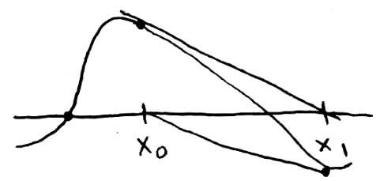
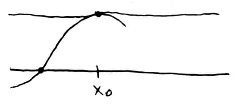

Numerical Analysis: A Nonlinear Story
Shortcut to this page: aln.netlify.com/nonlinear
This is the nonlinear version of the linear algebra story. The linear story was looking at how to solve problems of the form `Ax = b` i.e. `Ax - b = 0`, which is linear. This story looks at how to solve problems of the form `f(x) = g(x)` where `f(x), g(x)` are nonlinear. For example, they could be `x^2, x^3, cos(x), e^(x), ...`
A Numbers Store Stores Numbers
How does a computer store numbers? Vaguely, we could describe it as putting each digit in a space somewhere in the computer's memory. So `100` would need `3` spaces`color(red)(text(*))`. This seems like an easy and obvious idea until we get to numbers like `pi`, which has an infinite number of digits. Does this mean we need an infinite amount of memory to store `pi`? But computers don't have infinite memory, so what happens then?
`color(red)(text(*)`Computers work in binary, so things are a little bit different than this.
Computers store a number by keeping as much of it as it can, and then throwing away the rest. So if a computer can only store at most `8` digits, then it would store `pi` as `3.1415926`. But complications arise when we're dealing with really big or really small numbers. For example, `0.00000000000000045` would be stored as `0.0000000`, which is just `0`. This is a problem because `0.00000000000000045` isn't equal to `0`, but it would be treated as such. A similar problem occurs for `1000000000000000`, which would be stored as `10000000`, which is much much smaller.
This suggests needing a smarter way to represent the numbers. Enter, scientific notation. With scientific notation, we can represent `0.00000000000000045` as `0.45 xx 10^(-16)` and `1000000000000000` as `1 xx 10^15`. Then we would only need to store the `45` and the `-16` for `0.45 xx 10^(-16)`. And the `1` and the `15` for `1 xx 10^15`.
In these examples, the `45` and the `1` are called the "mantissa" and the `-16` and the `15` are called the "exponents".
Single-precision computers use 32 bits (4 bytes) to store a number:
1 bit for the sign (to indicate whether the number is positive or negative)
8 bits for the exponent
23 bits for the mantissa
Double-precision computers use 64 bits (8 bytes) to store a number:
1 bit for the sign
11 bits for the exponent
52 bits for the mantissa
Scientific notation helps make it easier to store numbers, but some complications still pop up. Consider a computer that can only store at most `3` digits in the mantissa. Let's say we wanted to store the number `0.002146`. In scientific notation, it would be `0.2146 xx 10^(-2)`, which has `4` digits in the mantissa. Our computer can only store `3` digits in the mantissa, so how should it be stored? There are 2 options: chopping and rounding.
Under chopping, `0.2146 xx 10^(-2)` would become `0.214 xx 10^(-2)`. As the name implies, the rest of the digits (after the `3^(rd)`) are "chopped off". Under rounding, `0.2146 xx 10^(-2)` would become `0.215 xx 10^(-2)`.
From this, we can see that what the computer stores isn't always going to be exactly equal to the original number. The version of the number that the computer stores can be denoted by `fl(x)`, where `x` is the original number.
So the difference between the original number and the stored number is going to be the error. There are `2` types of errors:
absolute error ` = abs(x - fl(x))`
relative error ` = abs(x - fl(x))/abs(x)`
Errors are bad, but unavoidable. So it would be helpful to know how bad the relative error could be for any number we want to store.
Let's say we want to store the number `x` (which is not `0`) on an `n`-digit chopping computer (a computer that stores at most `n` digits and uses the chopping method). Written in scientific notation,
`x = +- 0.d_1\ d_2\ d_3\ ... xx 10^a`
where `d_i` is the `i^(th)` digit of the mantissa of `x`
Since this computer uses chopping, it would only store the first `n` digits of the mantissa. Written in scientific notation,
`fl(x) = +- 0.d_1\ d_2\ d_3\ ...\ d_n xx 10^a`
We want to compute the relative error, so we need `abs(x - fl(x))` and `abs(x)`.
`abs(x - fl(x)) = 0.ubrace(00...0)_n\ d_(n+1)\ d_(n+2)\ ... xx 10^a`
`abs(x) = 0.d_1\ d_2\ d_3\ ... xx 10^a`
relative error = `abs(x - fl(x))/abs(x) = (0.obrace(00...0)^n\ d_(n+1)\ d_(n+2)\ ... xx 10^a)/(0.d_1\ d_2\ d_3\ ... xx 10^a)`
` = (0.obrace(00...0)^n\ d_(n+1)\ d_(n+2)\ ...)/(0.d_1\ d_2\ d_3\ ...)`
To find out the worst our error could be, we want to make it as large as possible. We do that by making the numerator as big as possible (by letting `d_(n+1) = d_(n+2) = ... = 9`) and making the denominator as small as possible (by letting `d_1 = 1` `color(red)(text(*))` and `d_2 = d_3 = ... = 0`).
`color(red)(text(*))``d_1` cannot be `0` because of the way numbers are written in scientific notation. You wouldn't write something like `0.083 xx 10^3`; it would be `0.83 xx 10^2`.
`le (0.obrace(00...0)^(n-1)1color(red)(text(*)))/(0.100)`
` = 0.obrace(0...0)^(n-2)1`
` = 10^(-(n-1))`
` = 10^(1-n)`
`color(red)(text(*))``0.999... = 1`
So the relative error — which we can denote by `epsilon` — can be at most `10^(1-n)`. This is the largest error possible for an `n`-digit chopping computer.
For an `n`-digit rounding computer, `epsilon = 1/2 * 10^(1-n)`
Let `x = 0.d_1\ d_2\ ... xx 10^a` be a real number. Suppose `d_(n+1) lt 5`. Then `fl(x) = 0.d_1\ d_2\ ... d_n xx 10^a`
relative error = `abs(x - fl(x))/abs(x)`
`= (0.obrace(0...0)^n\ d_(n+1)\ d_(n+2)\ ... xx 10^a)/(0.d_1\ d_2\ ... xx 10^a)`
`= (0.obrace(0...0)^n\ d_(n+1)\ d_(n+2)\ ...)/(0.d_1\ d_2\ ...)`
`le (0.obrace(0...0)^n49...)/(0.10...)`
`= (0.obrace(0...0)^n5)/(0.1)`
`= 0.obrace(0...0)^(n-1)5`
`= 0.5 xx 10^(-(n-1))`
`= 1/2 xx 10^(1-n)`
Now suppose `5 le d_(n+1) le 9`. Then `fl(x) = 0.d_1\ d_2\ ...\ d_n xx 10^a + 0.obrace(0...0)^(n-1)1 xx 10^a`
relative error = `abs(x - fl(x))/abs(x)`
`= abs(0.d_1\ d_2\ ...\ d_n\ d_(n+1)\ ... xx 10^a - 0.d_1\ ...\ d_n xx 10^a - 0.obrace(0...0)^(n-1)1 xx 10^a)/abs(0.d_1\ d_2\ ... xx 10^a)`
`= abs(0.obrace(0...0)^n\ d_(n+1)\ ... - 0.obrace(0...0)^(n-1)1)/abs(0.d_1\ d_2\ ...)color(red)(text(*)`
`le (0.obrace(0...0)^n5)/0.1`
`= 0.obrace(0...0)^(n-1)5`
`= 0.5 xx 10^(-(n-1))`
`= 1/2 xx 10^(1-n)`
`color(red)(text(*))` Since `5 le d_(n+1) le 9`, we have:
`abs(0.obrace(0...0)^n5 - 0.obrace(0...0)^(n-1)1) = 0.obrace(0...0)^n5`
`abs(0.obrace(0...0)^n6 - 0.obrace(0...0)^(n-1)1) = 0.obrace(0...0)^n4`
`abs(0.obrace(0...0)^n7 - 0.obrace(0...0)^(n-1)1) = 0.obrace(0...0)^n3`
`abs(0.obrace(0...0)^n8 - 0.obrace(0...0)^(n-1)1) = 0.obrace(0...0)^n2`
`abs(0.obrace(0...0)^n9 - 0.obrace(0...0)^(n-1)1) = 0.obrace(0...0)^n1`
So `d_(n+1) = 5` (and `d_(n+2) = d_(n+3) = ... = 0`) gives us the biggest error possible.
The story thus far: When we're working with really small/large numbers, computers won't be able to store them exactly as they are. Computers get around this by storing them using scientific notation. But even then, some numbers have so many digits (e.g. `pi`) that computers still can't store them exactly as they are. So computers either round the number or chop the number so there are less digits to store. This means that computers store a modified version of the number (denoted `fl(x)`).
Errors in Arithmetic Operations
Let's suppose we wanted to add `0.42312` and `0.63546` on a `3`-digit rounding computer. First, the computer would store them as `0.423` and `0.635`. Then, the computer would add those two to get `1.058``color(red)(text(*))`. Since this is a `3`-digit rounding computer, it would say that the answer is `1.06`. In math notation:
`fl(fl(0.42312) + fl(0.63546)) = fl(0.423 + 0.635) = fl(1.058) = 1.06`
Notice how this differs from the actual answer, which is `1.05858`.
`color(red)(text(*))` This is a `4`-digit number, but the computer can only store `3`-digit numbers. It turns out that computers temporarily store results of arithmetic operations using more digits if needed.
For longer strings of operations, the computer performs the operations pairwise. For example:
`x * y * z = color(red)((x * y)) * z`
the computer does `x*y` first, then multiplies that with `z`
`= fl(color(red)(fl(fl(x)*fl(y)))*fl(z))`
We've established that there are errors in storing numbers. And performing operations with "wrong" numbers will lead to numbers that are "more wrong". But how much error could there be when doing arithmetic operations?
Let's suppose we wanted to multiply two numbers, `x` and `y`. In the computer, they're stored as `fl(x)` and `fl(y)`. Well, we can write:
`fl(x) = x(1 + delta_1)`
`fl(y) = y(1 + delta_2)`
where `abs(delta_1)` and `abs(delta_2)` are the relative errors`color(red)(text(*))`
In words: `fl(text(some number))` is the actual value with some error attached to it.
`color(red)(text(*))` Recall that the formula for relative error is `abs(fl(x)-x)/abs(x)`
`fl(x) = x(1 + delta_1)`
`=> fl(x) = x + xdelta_1`
`=> fl(x) - x = xdelta_1`
`=> (fl(x) - x)/x = delta_1`
`=> abs(fl(x)-x)/abs(x) = abs(delta_1)`
so `abs(delta_1)` is the relative error (similarly for `abs(delta_2)`)
So multiplying those two values would result in:
`fl(fl(x)*fl(y))`
`= fl(x(1+delta_1)*y(1+delta_2))`
`= (x(1+delta_1)*y(1+delta_2))(1+delta_3)`
`= xy(1 + delta)`
where `abs(delta)` is the relative error
and `(1 + delta) = (1 + delta_1)(1 + delta_2)(1 + delta_3)`
`= 1 + delta_1 + delta_2 + delta_3 + delta_1delta_2 + delta_1delta_3 + delta_2delta_3 + delta_1delta_2delta_3`
So how big is the relative error?
`1 + delta = 1 + delta_1 + delta_2 + delta_3 + delta_1delta_2 + delta_1delta_3 + delta_2delta_3 + delta_1delta_2delta_3`
`=> delta = delta_1 + delta_2 + delta_3 + delta_1delta_2 + delta_1delta_3 + delta_2delta_3 + delta_1delta_2delta_3`
`=> abs(delta) = abs(delta_1 + delta_2 + delta_3 + delta_1delta_2 + delta_1delta_3 + delta_2delta_3 + delta_1delta_2delta_3)`
`=> abs(delta) le abs(delta_1) + abs(delta_2) + abs(delta_3) + abs(delta_1delta_2) + abs(delta_1delta_3) + abs(delta_2delta_3) + abs(delta_1delta_2delta_3)` (by triangle inequality)
In the previous section, we defined `epsilon` to be the largest possible relative error. So all of these relative errors are smaller than `epsilon`, i.e. `abs(delta_1), abs(delta_2), abs(delta_3) le epsilon`
`abs(delta) le abs(delta_1) + abs(delta_2) + abs(delta_3) + abs(delta_1delta_2) + abs(delta_1delta_3) + abs(delta_2delta_3) + abs(delta_1delta_2delta_3)`
`=> abs(delta) le epsilon + epsilon + epsilon + epsilon^2 + epsilon^2 + epsilon^2 + epsilon^3`
`= 3epsilon + 3epsilon^2 + epsilon^3`
`= 3epsilon + O(epsilon^2) = O(epsilon)`
So multiplying two numbers will lead to error, but it will be at most `3` times as bad as the worst error in storing a number.
`(x*y)*z` gets relative error `abs(delta) le 5epsilon + O(epsilon^2)`
`((x_1*x_2)*x_3)*x_4*...*x_m` gets relative error `abs(delta) le (2m-1)epsilon + O(epsilon^2)`
Now, let's suppose we wanted to subtract two numbers `x` and `y`.
`fl(fl(x)-fl(y)) = (x(1+delta_1) - y(1+delta_2))(1+delta_3)`
`= (x - y + xdelta_1 - ydelta_2)(1 + delta_3)`
`= (x - y)(1 + (xdelta_1)/(x-y) - (ydelta_2)/(x-y))(1 + delta_3)`
`= (x - y)(1 + delta)`
where `(1 + delta) = (1 + (xdelta_1)/(x-y) - (ydelta_2)/(x-y))(1 + delta_3)`
`=> delta = delta_3 + (xdelta_1)/(x-y) - (ydelta_2)/(x-y) + delta_3((xdelta_1)/(x-y) - (ydelta_2)/(x-y))`
But `abs(x/(x-y))` and `abs(y/(x-y))` can be very large when `x` is close to `y`. When this happens, `abs(delta)` will be very large. This is called catastrophic cancellation.
Example: For `n = 5` (a `5`-digit rounding computer), let's subtract `x = 1` and `y = 1.00001`. (The exact solution is `1 - 1.00001 = -0.00001`)
`fl(1) = 1` and `fl(1.00001) = 1.0000 = 1`
So `fl(1) - fl(1.00001) = 0`
Relative error = `abs(text(exact) - text(approximate))/abs(exact) = abs(-0.00001 - 0)/abs(-0.00001) = 1`
This means there is `100%` error.
1) Errors become slightly larger every arithmetic operation.
Because of this, we want to minimize the number of arithmetic operations whenever possible. For example, `1 + x + x^2 + x^3` takes `6` operations to do (`3` additions, `3` multiplications). However, we could rewrite `1 + x + x^2 + x^3` as `1 + x(1 + x(1 + x))`, which only requires `5` operations (`3` additions, `2` multiplications). The number of operations saved writing polynomials in nested form increases as the number of polynomials increases.
2) Catastrophic cancellation can occur when subtracting numbers.
Consider the situation of trying to find the roots of a quadratic equation `ax^2 + bx + c = 0`. Let's suppose `b` is positive and `a`, `c` are small so that `abs(-4ac)` is small. Then `x = (-b + sqrt(b^2-4ac))/(2a) ~~ (-b + sqrt(b^2))/(2a) = (-b + b)/(2a) = 0``color(red)(text(*))`, which leads to catastrophic cancellation. We could avoid this by rewriting `x` by multiplying it by `1`.
`x = (-b + sqrt(b^2-4ac))/(2a) * (-b-sqrt(b^2-4ac))/(-b-sqrt(b^2-4ac)) = (b^2 - (b^2 - 4ac))/(2a(-b-sqrt(b^2-4ac))) = (2c)/(-b-sqrt(b^2-4ac))`. In this case, catastrophic cancellation is avoided.
`color(red)(text(*))`It only equals `0` when the number of digits of `b` exceeds the number of digits the computer can store. After all, `sqrt(b^2 - 4ac) ~~ sqrt(b^2)`.
Catastrophic cancellation only occurs when the number of digits exceeds the number of digits of a number a computer can store. This is why everything is fine when doing something like `5 - 4.99999`.
The story thus far: Computers store modified versions of numbers. This means that the number the computer stores is "wrong". When we work with "wrong" numbers (e.g. add, multiply them), we're gonna get an answer that is even "more wrong". For multiplication, things aren't too bad. But for subtraction, we can get undesired results when the numbers we're subtracting are really close to each other.
Solving Nonlinear Equations: Roots
How do we solve something like `cos(x) = x`? Let's say we didn't have a calculator, so we can't find the exact answer. How can we find a (good) approximation? In general, how do we find an approximation for `f(x) = g(x)`?
Getting to the Root of the Problem
One way is to change the equation to the form `f(x) = 0`. Then, finding the roots of `f(x)` will be the solutions. Of course, it isn't going to be obvious what the roots are just from looking at something like `cos(x) - x = 0`. But we can try to trap a root in a small interval (i.e. find a small interval between which a root lies).
This can be done with an iterative algorithm. We start with a root trapped in a large interval and reduce the size of the interval at every step. But how do we find an interval in which there is a root? Without knowing this, we can't start the algorithm!
We do this by using the Intermediate Value Theorem, which says if `f` is a continuous function in `[a,b]`, then `f` assumes every value between `f(a)` and `f(b).`
In this example, `f` achieves every value between the dotted lines between `a` and `b`.
So how does this help us find roots? We can apply it to the situation where `f(a)` and `f(b)` have different signs (e.g. one is positive and the other is negative). If `f(a)` and `f(b)` have different signs, then `f` has a root in `[a, b]`.
Again, `f` achieves every value between the dotted lines between `a` and `b`. Here, the `x`-axis lies between the dotted lines, so it is guaranteed that `f` will cross the `x`-axis, i.e. `f(c) = 0` at some point `c` between `a` and `b`.
This suggests that we start the algorithm by picking `a_0, b_0` such that `f(a_0), f(b_0)` have different signs (e.g. `f(a_0)` is positive and `f(b_0)` is negative).
Now we have to reduce the size of the interval. We can split it in half; then, the root has to either be on the left half or the right half. So let's split it at `c_0` (the midpoint) and suppose that `f(c_0)` is positive.
Now we have two choices for what our new interval `[a_1, b_1]` could be: `[a_0, c_0]` or `[c_0, b_0]`. The IVT doesn't tell us if there's a root between `a_0` and `c_0`, but it does guarantee that there is a root between `c_0` and `b_0`. So the new interval `[a_1, b_1]` should be `[c_0, b_0]`.
And this process of dividing the interval in half repeats until the interval is small enough.
Error of the Bisection Method
The thing is, we're looking for a number, but we end up with an interval (two numbers). So how do we get our answer? We could just pick some number between that interval. At this point, the interval is really small, so our approximation should be close to the actual solution. But how much error is there?
Let's pick some number `d_n` and use that as our approximation. In this picture, there would be the most error if the actual solution was at `b_n`. In general,
`abs(text(exact)-text(approximate)) = abs(r - d_n) le abs(b_n - a_n)`
where `r` is the exact solution
This is because the worst error would occur when the approximation we pick is `a_n` and the actual solution is `b_n` (or vice versa).
We usually pick as our approximation the midpoint of `a_n` and `b_n`. That actually gives us a better approximation because the most error we could have then is half of the previous error. (This would be when the exact solution is either at `a_n` or at `b_n`.)
`abs(text(exact)-text(approximate)) = abs(r - c_n) le abs(b_n - a_n)/2`
In general, `abs(r - d_n) le max(abs(d_n-a_n), abs(d_n-b_n))`.
So to summarize, the algorithm for finding a root of a polynomial is:
Start with an interval `[a_0,b_0]` where `f(a_0)` and `f(b_0)` have different signs
Cut the interval in half at `c_0`, which is the midpoint of `[a_0,b_0]`
Pick a new (smaller) interval such that either `f(a_0)` and `f(c_0)` have different signs or `f(c_0)` and `f(b_0)` have different signs
Repeat the steps for that new (smaller) interval
As the steps suggest, the name of this algorithm is the bisection method.
Convergence of the Bisection Method
The bisection method generates a sequence of approximations:
`{c_n}_(n=0)^(oo)`
where `c_n = (a_n + b_n)/2`
If the actual solution is `r`, then what we want to say is that `color(blue)(lim_(n->oo) c_n = r)`. In words, the more times we do the algorithm, the more approximations we will get and the closer those approximations will be to the actual solution `r`.
Another way to say that is that the difference (i.e. error) between the approximation we get and the actual solution gets closer and closer to `0`. Generally, it might not be guaranteed to happen, but for the bisection method, it is true that the more times we do the algorithm, the closer it will get to `0`.
Previously, we found that `abs(r - c_n) le abs(b_n - a_n)/2`. Well that means `abs(r - c_0) le abs(b_0 - a_0)/2`. And also, `abs(r - c_1) le abs(b_1 - a_1)/2`.
But what is `abs(b_1 - a_1)`? Thinking back to the steps of the algorithm, `[a_1,b_1]` represented the new interval after splitting `[a_0,b_0]` in half. So `[a_1,b_1]` is really half of `[a_0,b_0]`. Which means `abs(b_1 - a_1) = abs(b_0 - a_0)/2`.
Putting all that together, `abs(r - c_1) le abs(b_1 - a_1)/2 = (abs(b_0 - a_0)/2)/2 = 1/2^2 (b_0 - a_0)`
Generalizing that idea, we can see that:
`abs(r - c_0) le 1/2^1 (b_0 - a_0)`
`abs(r - c_1) le 1/2^2 (b_0 - a_0)`
`abs(r - c_2) le 1/2^3 (b_0 - a_0)`
`abs(r - c_3) le 1/2^4 (b_0 - a_0)`
`vdots`
`abs(r - c_n) le 1/2^(n+1) (b_0 - a_0)`
Now, as `n` gets larger and larger (i.e. as we do more steps of the algorithm), the right-hand side gets smaller and smaller. When `n` goes to `oo`, the right-hand side goes to `0`.
This proves that what we want to say is true: `color(blue)(lim_(n->oo) abs(r - c_n) = 0 => lim_(n->oo)c_n = r)`
When this happens, we say that the bisection method converges.
So in theory, the error gets really small when `n` is large. But how large should `n` be? How many times should we keep dividing intervals in half until we get a satisfactory answer?
If we know that the worst error is `1/2^(n+1) (b_0 - a_0)`, then we can decide how small the error could be.
Note that the error bound is dependent only on `a_0`, `b_0`, and `n`. We can already figure out how much error there will be without even knowing what `f(x)` is.
Ex: Let's say the starting interval is `[-1,3]` and that we want the error to be no bigger than `10^(-12)`.
`(3-(-1))/(2^(n+1)) le 10^(-12)`
`4/(2^(n+1)) le 1/10^(12)`
`4*10^12 le 2^(n+1)`
`log_2(4*10^12) le n+1`
`n >= log_2(4*10^(12))-1 ~~ 41`
So if we do the bisection method for `41` steps, then the approximation we end up with will have an error of no more than `10^(-12)`.
There are other procedures for deciding when to stop without using error bounds.
We could stop when `abs(c_n - c_(n-1))` is small enough. In this case, we would be getting approximations that are unchanging because the error is so small. For example, if we got `{..., 0.98757, 0.98754, 0.98751, 0.98751, 0.98751, 0.98751}`, then we could be pretty sure that `0.98751` is a good approximation.
We could stop when `abs(f(c_n))` is small enough. In this case, `abs(f(c_n))` would be really close to `0`, which is what we wanted in the first place (because we're looking for roots).
We could stop when the algorithm takes too long or is not converging. This could happen for general algorithms (not the bisection method).
Matlab code for bisection method
function [c] = bisection(a,b,n) c = (a+b)/2; for step = 1:n % f is defined as another function in another .m file if f(a)*f(c) <= 0 b = c; else a = c; end c = (a+b)/2; end end
Speed of the Bisection Method
Since we're dealing with nonlinear equations, we can say that computing `f(x)` is relatively hard (i.e. time-consuming). Of course, a computer can do it almost instantly, but it takes more time to compute powers and roots than additions and divisions. So we can measure the speed of the bisection method by counting how many times we compute `f(x)`.
In the code above, we're calcuating `f(a)` and `f(c)` every iteration. That's `2` costly operations. It turns out we can reduce it to only `1` costly operation per iteration if we store their values.
function [c] = bisectionOptimized(a,b,n) c = (a+b)/2; fa = f(a); for step = 1:n fc = f(c); if fa*fc <= 0 b = c; else a = c; fa = fc; end c = (a+b)/2; end end
We only need to calculate `f(a)` once at the beginning to use IVT. After that, `a` becomes `c`. At this point, we've also already calculated `f(c)`, so when we're trying to find new intervals, we don't need to calculate `f(c)` again.
Let's look at the bisection method without the code. Let's assume that to find `c_0`, we have to first determine whether `f(a_0)` and `f(b_0)` have opposite signs. Then to find `c_1` we have to compute `f(c_0)` and so on.
`c_0`: `2` total function evaluations so far (`f(a_0)` and `f(b_0)`)
`c_1`: `3` total function evaluations so far (`f(c_0)` plus previous)
`c_2`: `4` total function evaluations so far (`f(c_1)` plus previous)
`vdots`
`c_n`: `n+2` function evaluations
The `2` function evaluations come from using the IVT to ensure that the root is in between the intervals.
Some details regarding the bisection method:
If `f(a)` and `f(c)` are both really large, then it's possible that multiplying them together results in a number that is too large for the computer to store. Then, we would get errors like we saw in the previous section. To avoid this, we could define a function called `sign(f(x)) = {(1 if f(x) > 0),(-1 if f(x) lt 0),(0 if f(x) = 0):}`. Then we could check if `sign(f(a)) != sign(f(c))` instead of multiplying them.
It might sound like a good idea to check if `f(c_n) = 0` to stop the algorithm early. That would mean that in doing our algorithm, we hit on the exact root. The chances of that happening are virtually `0` (imagine marking `sqrt(2)` exactly on a a number line). The bisection method will converge anyway, so checking that is an extra costly operation.
Like with the first point, it's possible that when calculating `c = (a+b)/2`, adding `a` and `b` results in a number too large to store. We can avoid this by calculating `c = a + (b-a)/2`. Note that `a + (b-a)/2 = (a + b)/2`.
The story thus far: Now we're looking at how to actually solve problems like `f(x) = g(x)`. One way is to rearrange the equation so that we get `f(x) - g(x) = 0` (for simplicity, we generalize it to `f(x) = 0`). Then the task is to find the roots/zeros of `f(x)`. One way to find a root is to start with a big interval in which the root is guaranteed to lie. Then we repeatedly make the interval smaller and smaller until it's really close to the root.
Speed of bisection method: `1` function evaluation per iteration
Convergence of bisection method: `e_n = 1/(2^(n+1))(b_0 - a_0)`
Straight to the Point
Another method we could use is Newton's method. In this method, we use tangent lines to approximate the root.
The idea is to start at an initial guess `x_0` and repeatedly draw tangent lines until we (hopefully) get close to the root.
Using the point-slope formula for the equation of a line, we can get the equation of the tangent line at `x_0`:
`y - f(x_0) = f'(x_0)(x - x_0)`
`y = f'(x_0)(x - x_0) + f(x_0)`
Our goal is to get `y = 0`, so we have:
`0 = f'(x_0)(x - x_0) + f(x_0)`
Solving for `x`, we get:
`x = x_0 - f(x_0)/(f'(x_0))`
This is the intuition behind the iterative formula for Newton's method:
`x_(n+1) = x_n - f(x_n)/(f'(x_n))`
There are some cases where Newton's method won't work.
Here, each approximation results in a tangent line that just keeps going to the right.
Here, the approximations will just keep bouncing back and forth between `x_0` and `x_1`.
Here, the tangent line doesn't cross the `x`-axis, so we can't get an approximation.
So unlike the bisection method, Newton's method won't always work. However, it's still worth looking at Newton's method, because it turns out that it is generally faster than the bisection method.
Error of Newton's Method
A Taylor series represents a function as an infinite sum.
`f(x) = f(a) + (f'(a))/(1!)(x-a) + (f''(a))/(2!)(x-a)^2 + (f'''(a))/(3!)(x-a)^3 + ...`
`f(x) = sum_(n=0)^(oo) (f^(n)(a))/(n!)(x-a)^(n)`
To look at the error, we need an equation with `abs(x_(n+1) - r)`. Since `x_(n+1) = x_n - f(x_n)/(f'(x_n))`, we need `x_n`, `f(x_n)`, and `f'(x_n)` to get `x_(n+1)`. We can get those `3` parts by looking at the Taylor series expansion of `f`.
Notice that the first `2` terms of the Taylor series are the equation of a line for `f(x)` (and thus, are a linear approximation of `f(x)`). Since we're looking at approximations using lines, we'll consider the first `2` terms and collect the rest of the terms as some error.
`f(x) = f(x_n) + f'(x_n)(x-x_n) + (f''(xi_n))/2(x-x_n)^2`
for some `xi_n` between `x` and `x_n`
Since we're interested in finding the root of `f(x)`, we can use `x = r` where `r` is a root to get:
`0 = f(x_n) + f'(x_n)(r-x_n) + (f''(xi_n))/2(r-x_n)^2`
`r = x_n - f(x_n)/(f'(x_n)) - (f''(xi_n))/(2f'(x_n))(r-x_n)^2`
Well, `x_n - f(x_n)/(f'(x_n)) = x_(n+1)` from the iterative formula for Newton's method, so we have:
`r = x_(n+1) - (f''(xi_n))/(2f'(x_n))(r-x_n)^2`
`x_(n+1)-r = (f''(xi_n))/(2f'(x_n))(r-x_n)^2`
Then, we can let `e_n = x_n - r` be the error between the approximation and the root (so `e_(n+1) = x_(n+1)-r`).
`e_(n+1) = (f''(xi_n))/(2f'(x_n))(e_n)^2`
This means that the error between our `(n+1)^(st)` approximation and the root is roughly equal to the square of the error between the `n^(th)` approximation and the root. So if the error was small for the `n^(th)` approximation, the error will be even smaller for the `(n+1)^(st)` approximation.
If `f'(x_n) = 0` (the slope of the tangent line is horizontal), then we get a `0` in the denominator. This explains one of the cases where Newton's method doesn't work mentioned earlier.
If `f''(xi_n) = oo` (the second derivative of `f` doesn't exist), then we get really large error.
Speed of Newton's Method
The iterative formula for Newton's method is `x_(n+1) = x_n - f(x_n)/(f'(x_n))`. From this, we can see that it requires `2` function evaluations per iteration. The bisection method required `2` function evaluations at the beginning, but then it only required `1` function evaluation per iteration. This means that Newton's method does roughly twice as many function evaluations per iteration as the bisection method. Doing more function evaluations means that Newton's method is slower than the bisection method.
Convergence of Newton's Method
But maybe Newton's method will converge faster than the bisection method will? Let's look back at the error equation `e_(n+1) = (f''(xi_n))/(2f'(x_n))(e_n)^2`. If we start with an initial guess close enough to `r`, then `(f''(xi_n))/(2f'(x_n)) ~~ (f''(r))/(2f'(r))`, which is a constant, so we can call it `c`. Then the error for Newton's method can be represented as `e_(n+1) ~~ c(e_n)^2`.
Let's say the error of the `n^(th)` approximation was `0.001`.
| Bisection Method | Newton's Method | |
| Error Formula | `e_(n+1) = 1/2e_n` | `e_(n+1) ~~ c(e_n)^2` |
| `e_n` | `0.001` | `0.001` |
| `e_(n+1)` | `0.0005` | `c*0.000001` |
From this, we can see that Newton's method (generally) converges faster than the bisection method. The convergence of Newton's method is described as "quadratic convergence" because of the power `2`.
But this doesn't mean that Newton's method always converges faster than the bisection method. It's possible that Newton's method won't converge at all (when `f' = 0` and/or `f''` doesn't exist). However, there are some theorems that guarantee the convergence of Newton's method.
Let's suppose `f'(x)`,`f''(x)` are continuous around `x = r` and `f'(r) != 0`. Then it turns out that if we start with an intial guess close enough to `r`, we can get `x_n -> r` (i.e. the `n^(th)` approximation will approach `r`).
Another convergence result is that if `f''(x) > 0` (`f` is concave up) in the interval `[r, oo)` and `f'(x) > 0` (`f` is increasing) in the interval `[r,oo)`, then `x_0 in [r,oo)` implies Newton's method will converge to `r`.
This is an example where `f'' > 0` and `f' > 0`.
We can see that if we continue, we will eventually hit `r`. This is what the second convergence result is saying. It's important to note that we have to start at an `x_0` to the right of `r`, i.e. `x_0 > r`.
To prove the second convergence result, we have to show that:
`x_n` is decreasing, i.e. `x_n lt ... lt x_3 lt x_2 lt x_1 lt x_0`
every approximation will be to the right of `r`, i.e. `x_n in [r,oo)`
a decreasing sequence bounded from below has to converge to `s le r`
if `x_n -> s` then `s` is a root
`s` is actually `r` (the root is unique)
`1`. `x_n` is decreasing
To show that `x_n` is decreasing, we have to show that `x_(n+1) lt x_n`, which means we need an equation with `x_(n+1)` and `x_n`. So we look at the iterative formula.
We have `x_(n+1) = x_n - f(x_n)/(f'(x_n))`
Since `f' > 0`, `f(r) = 0`, and `x_n > r`, we get that `f(x_n) > 0`
Also, since `f' > 0`, we get that `f'(x_n) > 0`
So `f(x_n)/(f'(x_n)) > 0`
Rearranging terms, we get `x_n - x_(n+1) = f(x_n)/(f'(x_n)) gt 0`
`x_n - x_(n+1) gt 0 => x_n gt x_(n+1)`
In words, `x_(n+1)` is obtained by getting `x_n` and taking away a part of it. If you take away a part of the original amount, then the amount you end up with will always be less than the original amount.
`2`. every approximation will be to the right of `r`
To show that every approximation will be to the right of `r`, we have to show that `x_n > r` for `n ge 1`. To get an equation with `x_n` (or `x_(n+1)`) and `r`, we can look at the error equation.
We have `x_(n+1) - r = e_(n+1) = (f''(xi_n))/(2f'(x_n))(e_n)^2`
`(e_n)^2 gt 0` since it is a square
We also assumed `f'' > 0` & `f' > 0`
So we have `e_(n+1) = (f''(xi_n))/(2f'(x_n))(e_n)^2 gt 0`
But `e_(n+1)` also equals `x_(n+1) - r`, so `x_(n+1) - r gt 0 => x_(n+1) gt r`
By assumption, `x_0 gt r`. From `1`., we have that `x_n` is decreasing. (Note that `x_0 ge x_n` because `x_n` is decreasing.) But if we keep decreasing and `x_(n+1) gt r` (`x_(n+1)` is still to the right of `r`), then that must mean all the approximations between `x_0` and `x_(n+1)` have to be to the right of `r`
`3`. a decreasing sequence bounded from below has to converge to `s le r`
If every approximation is to the right of `r`, then we will never go below (to the left of) `r` (from `2`.)
But we also can't be jumping randomly either because `x_n` is decreasing (from `1`.)
So we have to keep moving left but never past `r`
We have to stop at some point either because we're at `r` or because the amount `x_n` is decreasing by is virtually `0`
Note: the second option means that it could stop at a point `s` before `r`
`4`. if `x_n -> s` then `s` is a root
To prove that `s` is a root of `f`, we need to show that `f(s) = 0`, which means we need an equation with `f(x_n)`. So we look at the iterative formula.
We have `x_(n+1) = x_n - f(x_n)/(f'(x_n))`
Since `f` and `f'` are continuous, `lim_(n->oo) x_(n+1) = lim_(n->oo) x_n - f(x_n)/(f'(x_n))` (we can take limits of both sides because they're continuous functions)
Since we have `x_n -> s`, `lim_(n->oo) x_(n+1) = s` and `lim_(n->oo) x_n = s`
So we end up with `s = s - f(s)/(f'(s))` (we can also move limits inside functions since those functions are continuous)
`=> 0 = -f(s)/(f'(s)) => f(s) = 0`, which means `s` is a root
`5`.`s` is actually `r`
What we want to show is that `s = r`. We can do this by showing `s-r = 0`, which means we need an equation with `s-r`.
Using the Mean Value Theorem (described later in the story) on the interval between `s` and `r` we get: `f(s) = f(r) + f'(alpha)(s-r)` for some `alpha` between `s` and `r`
From `4`., `s` is a root, so `f(s) = 0`. Also, `f(r)` is a root by definition
`0 = 0 + f'(alpha)(s-r)`
`f'(alpha) != 0` since `f' > 0`, so we can divide both sides by `f'(alpha)`
`s - r = 0 => s = r`
Note: this proves that Newton's method converges to a unique root
We proved that Newton's method converges on the interval `[r,oo)` when `f'' > 0` and `f' > 0`. We can take a similar approach to prove that Newton's method converges:
on the interval `[r,oo)` when `f'' lt 0` and `f' lt 0`
on the interval `(-oo,r]` when `f'' > 0` and `f' lt 0`
on the interval `(-oo,r]` when `f'' lt 0` and `f' > 0`
The story thus far: Newton's method approximates a root by repeatedly drawing tangent lines until the root of the tangent line matches the root of the function. It has to do more function evaluations per iteration than the bisection method, but it converges faster than the bisection method.
Speed of Newton's method: `2` function evaluations per iteration
Convergence of Newton's method: `e_(n+1) = (f''(xi_n))/(2f'(x_n))(e_n)^2` for `xi_n` between `x_n` and `r`
Iterative formula for Newton's method: `x_(n+1) = x_n - f(x_n)/(f'(x_n))`
Solving Systems with `2` variables:
Suppose we wanted to solve a system like this: `{(f_1(x_1,x_2),=,0),(f_2(x_1,x_2),=,0):}` where `(r_1,r_2)` is the root
Using Taylor series, we can represent `f_1` as:
`f_1(r_1,r_2) ~~ color(blue)(f_1(x_1^((0)),r_2)) + color(green)((delf_1)/(delx_1)(x_1^((0)),r_2)(r_1-x_1^((0))))`
`~~ color(blue)(f_1(x_1^((0)),x_2^((0))) + (delf_1)/(delx_2)(x_1^((0)),x_2^((0)))(r_2-x_2^((0))) + color(green)((delf_1)/(delx_1)(x_1^((0)),x_2^((0)))(r_1-x_1^((0))))`
And similarly for `f_2`:
`f_2(r_1,r_2) ~~ f_2(x_1^((0)),x_2^((0))) + (delf_2)/(delx_1)(x_1^((0)),x_2^((0)))(r_1-x_1^((0))) + (delf_2)/(delx_2)(x_1^((0)),x_2^((0)))(r_2-x_2^((0)))`
Then, with our initial guess `(x_1^((0)), x_2^((0)))`, we would solve it by doing:
`[[x_1^((1))],[x_2^((1))]] = [[x_1^((0))],[x_2^((0))]] - [[(delf_1)/(delx_1)(x_1^((0)),x_2^((0))),(delf_1)/(delx_2)(x_1^((0)),x_2^((0)))],[(delf_2)/(delx_1)(x_1^((0)),x_2^((0))),(delf_2)/(delx_2)(x_1^((0)),x_2^((0)))]]^(-1)[[f_1(x_1^((0)),x_2^((0)))],[f_2(x_1^((0)),x_2^((0)))]]`
Oh See Can't You See
So Newton's method converges faster than the bisection method does, but it requires more function evaluations. Is there a method that converges faster than the bisection method and requires less function evaluations than Newton's method does?
Newton's method looked at tangent lines. Let's look instead at secant lines.
The secant method is a variation of Newton's method. It still uses the iterative formula `x_(n+1) = x_n - f(x_n)/(f'(x_n))`, but the difference is that `f'(x_n)` will be the slope of the secant line, not the tangent line.
The derivative can be calculated by `f'(a) = lim_(x->a) (f(x)-f(a))/(x-a)`. Without the limit, it can be approximated by `f'(a) ~~ (f(x)-f(a))/(x-a)`.
One way to get `f'(x_n)` is to consider the slope of the secant line through `x_(n-1)` and `x_n`. Then we have `f'(x_n) ~~ (f(x_n)-f(x_(n-1)))/(x_n-x_(n-1))`. This leads to the iterative formula for the secant method:
`x_(n+1) = x_n - f(x_n)/((f(x_n)-f(x_(n-1)))/(x_n-x_(n-1)))`
`x_(n+1) = x_n - (f(x_n)(x_n - x_(n-1)))/(f(x_n)-f(x_(n-1)))`
The idea is that we're getting our next approximation by drawing the secant line through our previous two approximations.
Notice how using the previous two approximations means we only need `1` function evaluation per iteration.
| all function evaluations needed | new function evaluations needed | |
| `x_0` | `f(x_0)` | `f(x_0)` |
| `x_1` | `f(x_1)` | `f(x_1)` |
| `x_2` | `f(x_0), f(x_1)` | none |
| `x_3` | `f(x_1), f(x_2)` | `f(x_2)` |
| `x_4` | `f(x_2), f(x_3)` | `f(x_3)` |
Error of Secant Method
To look at the error, we can start by rewriting the iterative formula:
`x_(n+1) = x_n - (f(x_n)(x_n - x_(n-1)))/(f(x_n)-f(x_(n-1)))`
`x_(n+1) = (x_n(f(x_n)-f(x_(n-1))))/(f(x_n)-f(x_(n-1))) - (x_nf(x_n) - x_(n-1)f(x_n))/(f(x_n)-f(x_(n-1)))`
`x_(n+1) = (x_nf(x_n) - x_nf(x_(n-1)) - x_nf(x_n) + x_(n-1)f(x_n))/(f(x_n)-f(x_(n-1)))`
`x_(n+1) = (x_(n-1)f(x_n) - x_nf(x_(n-1)))/(f(x_n)-f(x_(n-1)))`
Now we can look at `e_(n+1) = x_(n+1) - r`:
`x_(n+1)-r = (x_(n-1)f(x_n) - x_nf(x_(n-1)))/(f(x_n)-f(x_(n-1)))-r`
`x_(n+1)-r = (x_(n-1)f(x_n) - x_nf(x_(n-1)))/(f(x_n)-f(x_(n-1)))-(r(f(x_n)-f(x_(n-1))))/(f(x_n)-f(x_(n-1)))`
`x_(n+1)-r = (x_(n-1)f(x_n) - x_nf(x_(n-1)) - rf(x_n) + rf(x_(n-1)))/(f(x_n)-f(x_(n-1)))`
Using the fact that `e_(n-1) = x_(n-1)-r` and `e_n = x_n - r`:
`x_(n+1)-r = (e_(n-1)f(x_n)-e_nf(x_(n-1)))/(f(x_n)-f(x_(n-1)))`
`x_(n+1)-r = ((f(x_n)/e_n - f(x_(n-1))/e_(n-1))/(f(x_n)-f(x_(n-1))))(e_(n-1)e_n)`
by factoring out `(e_(n-1)e_n)`
Multiplying by `1 = (x_n-x_(n-1))/(x_n-x_(n-1))`:
`x_(n+1)-r = ((x_n-x_(n-1))/(f(x_n)-f(x_(n-1)))*(f(x_n)/e_n-f(x_(n-1))/e_(n-1))/(x_n-x_(n-1)))e_(n-1)e_n`
`(x_n-x_(n-1))/(f(x_n)-f(x_(n-1)))` is a constant
Since we're looking at subtracting `2` functions, maybe it would be helpful to write those functions as Taylor series expansions and hope that terms cancel out through subtraction.
Taylor series of `f` centered at `r`:
`f(x_n) = f(r) + f'(r)(x_n-r) + (f''(r))/2(x_n-r)^2 + ... = f(r) + f'(r)e_n + (f''(r))/2(e_n)^2 + ...`
Similarly, `f(x_(n-1)) = f(r) + f'(r)e_(n-1) + (f''(r))/2(e_(n-1))^2 + ...`
Subtracting `f(x_(n-1))` and `f(x_n)` gives us:
`f(x_n)-f(x_(n-1)) = f'(r)(e_n-e_(n-1)) + ...`
Well, `e_n-e_(n-1) = (x_n-r)-(x_(n-1)-r)=x_n-x_(n-1)`
So `f(x_n)-f(x_(n-1)) ~~ f'(r)(x_n-x_(n-1))`
Which means `(x_n-x_(n-1))/(f(x_n)-f(x_(n-1))) ~~ (x_n-x_(n-1))/(f'(r)(x_n-x_(n-1))) = 1/(f'(r))`, which is a constant
`(f(x_n)/e_n-f(x_(n-1))/e_(n-1))/(x_n-x_(n-1))` is a constant
`f(x_n)/e_n = f'(r) + (f''(r))/2e_n + ...`
`f(x_(n-1))/e_(n-1) = f'(r) + (f''(r))/2e_(n-1) + ...`
Subtracting `f(x_(n-1))/e_(n-1)` and `f(x_n)/e_n` gives us:
`f(x_n)/e_n-f(x_(n-1))/e_(n-1) = (f''(r))/2(e_n-e_(n-1)) + ...`
Well, `e_n-e_(n-1) = (x_n-r)-(x_(n-1)-r)=x_n-x_(n-1)`
So `f(x_n)/e_n-f(x_(n-1))/e_(n-1) ~~ (f''(r))/2(x_n-x_(n-1))`
Which means `(f(x_n)/e_n-f(x_(n-1))/e_(n-1))/(x_n-x_(n-1)) ~~ ((f''(r))/2(x_n-x_(n-1)))/(x_n-x_(n-1)) = (f''(r))/2`, which is a constant
Combining the results above, we get that `x_(n+1)-r = e_(n+1) ~~ Ce_(n-1)e_n` where `C = (f''(r))/(2f'(r))`. If we want to compare this error to the error in Newton's method (which was `e_(n+1) = c(e_n)^2`), then we should rewrite `e_(n+1) = Ce_(n-1)e_n` in the form of `A(e_n)^(alpha)` and find out what `alpha` is. If `alpha lt 2`, then the secant method converges slower than Newton's method. If `alpha > 2`, then the secant method converges faster than Newton's method.
Suppose `e_(n+1) = Ce_(n-1)e_n = A(e_n)^(alpha)`.
From `e_(n+1) = A(e_n)^(alpha)`, we get:
`e_n = A(e_(n-1))^(alpha)`
Rearranging terms, we get:
`e_(n-1) = (e_n)^(1/alpha)/A^(1/alpha)`
Plugging `e_(n-1)` and `e_n` into `Ce_(n-1)e_n = A(e_n)^(alpha)`:
`Ce_(n-1)e_n = C(e_n)^(1/alpha)/A^(1/alpha)A(e_(n-1))^(alpha)`
Using `e_n = A(e_(n-1))^(alpha)`, we can find `(e_(n-1))^(alpha)`:
`e_n = A(e_(n-1))^(alpha) => (e_(n-1))^(alpha) = e_n/A`
Now we substitute `e_n/A` for `(e_(n-1))^(alpha)` in `C(e_n)^(1/alpha)/A^(1/alpha)A(e_(n-1))^(alpha)`:
`C(e_n)^(1/alpha)/A^(1/alpha)A(e_n/A)`
`C(e_n)^(1/alpha)/A^(1/alpha)e_n`
`C/A^(1/alpha)(e_n)^(1+1/alpha)`
So `Ce_(n-1)e_n = C/A^(1/alpha)(e_n)^(1+1/alpha) = A(e_n)^(alpha)`, which means `alpha = 1 + 1/alpha`
`alpha = 1 + 1/alpha => alpha^2 = alpha + 1 => alpha^2-alpha-1 = 0`
Using the quadratic formula, we get:
`alpha = (1 + sqrt(5))/2 ~~ 1.62`
So `x_(n+1)-r = e_(n+1) = A(e_n)^(1.62)`, which means the secant method converges slower than Newton's method.
Speed of Secant Method
Recall that the secant method only requires `1` function evaluation per iteration, and that Newton's method requires `2` function evaluations per iteration. This means that we can perform `2` steps of the secant method in the time it takes to perform `1` step of Newton's method. So to compare them on a level playing field, we can compare the error when performing `2` steps of the secant method vs. the error in performing `1` step of Newton's method.
For the secant method:
| `x_(n+1)` | `abs(e_(n+1)) ~~ Cabs(e_n)^(1.62)` |
| `x_(n+2)` | `abs(e_(n+2)) ~~ Cabs(e_(n+1))^(1.62) ~~ C(Cabs(e_n)^(1.62))^(1.62) ~~ C^(1.62)abs(e_n)^(1.62^2) ~~ Cabs(e_n)^2.62` |
Comparing `Cabs(e_n)^2.62` to Newton's `cabs(e_n)^2`, we can see that the secant method can be considered faster.
The story thus far: The secant method is a variation of Newton's method where we use secant lines instead of tangent lines to approximate roots. It requires fewer function evaluations per iteration than Newton's method, but it may be faster or slower than Newton's method depending on how we study it.
Speed of secant method: `1` function evaluation per iteration
Convergence of secant method: `e_(n+1) = (f''(r))/(2f'(r))e_(n-1)e_n`
Iterative formula for secant method: `x_(n+1) = x_n - (f(x_n)(x_n - x_(n-1)))/(f(x_n)-f(x_(n-1)))`
Solving Nonlinear Equations: Fixed Point Method
Switching gears, let's look at ways to solve nonlinear equations without finding roots.
A Fixed Point of View
With Newton's method, we had: `x_(n+1) = x_n - f(x_n)/(f'(x_n))`. Well, we could consider the right hand side as just one big function of `x_n`, call it `F(x_n)`. Then we have `x_(n+1) = F(x_n)`. So we plug in `x_n` and get out `x_(n+1)`. Let's suppose that we do this enough times so that `x_n -> s`. Then:
`lim_(n->oo) x_(n+1) = lim_(n->oo)F(x_n)`
`s = F(lim_(n->oo) x_n)` (since `F` is continuous)
`s = F(s)`
This is saying that if we plug in a value, we get back that same value. This leads to another way of solving nonlinear equations: solving `x = F(x)` (as opposed to solving `f(x) = 0`).
The points `x` that satisfy `F(x) = x` are called fixed points. The idea is that if we apply `F` to `x` and we get back the same `x`, then that `x` is not changing, i.e. fixed.
`cosx = x`
root finding: `f(x) = cosx - x`
fixed point: `F(x) = cosx`
`x^2 = 2`
root finding: `f(x) = x^2 - 2`
fixed point: `ubrace(x^2-2+x)_(F(x)) = x`
fixed point: `ubrace(2/x)_(F(x)) = x`
fixed point: `ubrace(x/2 + 1/x)_(F(x)color(red)(text(*))) = x`
`color(red)(text(*))` this comes from Newton's method: `x - (x^2-2)/(2x)`
There are many options for solving nonlinear equations using the fixed point method. As long as the equation is of the form "`x` equals a function of `x`".
For this method to work, we need `F` to be contractive. `F` is contractive if there exists a positive `lambda lt 1` such that `abs(F(x)-F(y)) le lambdaabs(x-y)` for all `x,y`. It's "contractive" because the distance between `x` and `y` (represented by `abs(x-y)`) is getting smaller after applying `F` (because `lambda lt 1`).
Note: If `F` is contractive, then `F` is continuous.
Fixed Point Theorem: Let `F:[a,b] -> [a,b]` be a contractive map. Then `F` has a unique fixed point in `[a,b]`. Also, `x_(n+1) = F(x_n)` with `x_0 in [a,b]` will converge to that fixed point.
Suppose `x` and `y` are fixed points in `[a,b]`. We want to show that `x = y`
`abs(F(x)-F(y)) le lambdaabs(x-y)`
`abs(x-y) le lambdaabs(x-y)` (since `x` is a fixed point, `F(x) = x`)
There are `2` cases: either `abs(x-y) != 0` or `abs(x-y) = 0`
Suppose `abs(x-y) != 0`. Then we can divide both sides by `abs(x-y)` to get `1 le lambda`, which is a contradiction because `lambda lt 1`
This means that `abs(x-y) = 0`, which means that `x = y`
We want to show that `x_n -> p` for some fixed point `p`
Rewrite `x_n` as `x_0 + (x_1 - x_0) + (x_2 - x_1) + ... + (x_n - x_(n-1))`:
`x_n = x_0 + (x_1 - x_0) + (x_2 - x_1) + ... + (x_n - x_(n-1))`
`x_n = x_0 + sum_(n=1)^(oo) (x_n - x_(n-1))`
Showing that `x_n` converges is the same as showing that `sum_(n=1)^(oo) (x_n - x_(n-1))` converges, so let's look at that sum
Showing that `sum_(n=1)^(oo) (x_n - x_(n-1))` converges is the same as showing that `sum_(n=1)^(oo) abs(x_n - x_(n-1))` converges. We can do that by repeatedly applying `x_(n+1) = F(x_(n))` and `abs(F(x)-F(y)) le lambdaabs(x-y)`
`abs(x_n - x_(n-1)) = abs(F(x_(n-1))-F(x_(n-2)))`
`abs(F(x_(n-1))-F(x_(n-2))) le lambdaabs(x_(n-1)-x_(n-2))`
`= lambda(F(x_(n-2))-F(x_(n-3)))`
`le lambda^2abs(x_(n-2)-x_(n-3))`
`le ... le lambda^(n-1)abs(x_1-x_0)`
So `sum_(n=1)^(oo) abs(x_n - x_(n-1)) le sum_(n=1)^(oo) lambda^(n-1)abs(x_1-x_0)`
`sum_(n=1)^(oo) lambda^(n-1)abs(x_1-x_0) = abs(x_1-x_0)sum_(n=1)^(oo) lambda^(n-1)`
`= abs(x_1-x_0)sum_(n=0)^(oo)lambda^n`
`= abs(x_1-x_0)1/(1-lambda)color(red)(text(*))`, which is a number
So `x_n` converges. Let's say it converges to `p`. At the beginning of this section, we showed that `s = F(s)` if `x_n -> s`. Here `x_n -> p` so `p = F(p)`, i.e. `x_n` converges to the fixed point.
`color(red)(text(*))`This comes from the closed form of a geometric series. Note that `lambda lt 1`.
So how do we know what to use for `lambda`? It turns out that we can answer this by looking at the Mean Value Theorem, which says that if `f` is continuous on `[a,b]` and differentiable on `(a,b)`, then there exists a point `c` between `a` and `b` such that `f'(c) = (f(b)-f(a))/(b-a)`.
For our situation, we can adjust that equation a little bit to get:
`F'(xi) = (F(x)-F(y))/(x-y)`
`F(x)-F(y) = F'(xi)(x-y)`
Notice how similar this is to the contractive property: `abs(F(x)-F(y)) le lambdaabs(x-y)`. This means we can use `F'(xi)` for `lambda`.
`abs(F(x)-F(y)) le (max_(z in [a,b]) abs(F'(z)))color(red)(text(*)) abs(x-y)`
`color(red)(text(*))`If this is less than `1`, then `color(red)(text(*))` serves as `lambda`.
Also, `max_(z in [a,b]) abs(F'(z)) lt 1 iff f` is a contractive map.
This is the graphical interpretation of looking at fixed points. Notice that the point is on the line `y = x` and `y = F(x)`. So `x = F(x)`.
Convergence of the Fixed Point Method
Let's suppose the fixed point iterations converge to `s`. To look at the convergence, let's look at how the error compares to the error of Newton's method.
So let's start with `e_(n+1) = x_(n+1) - s`. From the formula `x_(n+1) = F(x_n)` and the definition of fixed point, we get:
`x_(n+1) - s`
`F(x_n) - F(s)`
To introduce `x_n - s = e_n`, we can look at the Taylor series expansion of `F(x_n)`:
`color(green)(F(x_n)) - F(s)`
`color(green)(F(s) + F'(s)(x_n-s) + (F''(s))/2(x_n-s)^2 + ...) - F(s)`
`F'(s)(x_n-s) + (F''(s))/2(x_n-s)^2 + ...`
`F'(s)e_n + (F''(s))/2(e_n)^2 + ...`
So `e_(n+1) = F'(s)(e_n) + (F''(s))/2(e_n)^2 + ...` Notice that the error depends on the differentiability of `F`.
`color(blue)(F'(s) != 0 => e_(n+1) ~~ F'(s)e_n)`
`color(green)(F'(s) = 0\ text(and)\ F''(s) != 0 => e_(n+1) ~~ (F''(s))/2(e_n)^2)`
`color(purple)(F'(s) = F''(s) = 0\ text(and)\ F'''(s) != 0 => e_(n+1) ~~ (F'''(s))/(3!)(e_n)^3)`
Recall that the error for Newton's method is `e_(n+1) = c(e_n)^2` where `c` is a constant.
Fixed point method vs. Newton's method
`color(blue)(e_(n+1) ~~ F'(s)e_n\ text(vs.)\ e_(n+1) = c(e_n)^2)`
`color(blue)(text(Fixed point converges slower than Newton's method does))`
`color(green)(e_(n+1) ~~ (F''(s))/2(e_n)^2\ text(vs.)\ e_(n+1) = c(e_n)^2)`
`color(green)(text(Fixed point converges at the same rate as Newton's method does))`
`color(purple)(e_(n+1) ~~ (F'''(s))/(3!)(e_n)^3\ text(vs.)\ e_(n+1) = c(e_n)^2)`
`color(purple)(text(Fixed point converges faster than Newton's method does))`
We say a sequence has order of convergence `q` if `abs(e_(n+1))/abs(e_n)^q` converges to some nonzero number. (Sometimes the nonzero number is referred to as the "asymptotic error constant".) Higher orders of convergence means the sequence converges faster.
The story thus far: Instead of looking at solving problems of the form `f(x) = 0`, we look at solving problems of the form `f(x) = x`. Finding an `x` such that `f(x) = x` is done with the fixed point method. In order for the fixed point method to converge, `F` has to be contractive, which means that there exists a positive `lambda lt 1` such that `abs(F(x)-F(y)) le lambdaabs(x-y)`. From the MVT, we can use `max_x abs(F'(x))` for `lambda`.
Speed of fixed point method: `1` function evaluation per iteration
Convergence of fixed point method: `e_(n+1) = F'(s)e_n + (F''(s))/2(e_n)^2 + ...`
Iterative formula for fixed point method: `x_(n+1) = F(x_n)`
Solving Nonlinear Equations: Polynomial Interpolation
Going back to the root-finding problem, we've been able to find just one root. However, it would be nice to be able to use the algorithms to find all the roots. It turns out that we actually can do this with polynomials because of their special properties.
Polynomial Theorems
`p(x) = a_0 + a_1x + a_2x^2 + ... + a_nx^n` (with `a_n != 0`) is a polynomial. The degree of a polynomial is the highest power, which in this case is `n`, denoted as `deg\ p(x) = n`.
The Fundamental Theorem of Algebra says that every nonconstant polynomial has at least one root in the complex field. In fact, an extension of this theorem states something more powerful: if the degree of a polynomial is `n`, then there are exactly `n` roots in the complex field. What we would like is to use our algorithms to find all these (real) roots.
When performing operations with polynomials, the degree can only stay the same or go down.
`x^2 + x^2 = 2x^2`
`5x^3 - 3x^3 = 2x^3`
`x^3*x^2 = x^5` (note the degree of the left-hand side is `5`, not `3` or `2`)
`x^6/x^2 = x^4`
We can divide polynomials just like we can divide numbers. If we divide a polynomial `p(x)` (which has degree of at least `1`) by a linear polynomial `(x-s)`, then the result is a quotient `q(x)` (which is a polynomial) and a remainder `r`.
`p(x) = (x-s)q(x) + r`
Using real numbers, this is like saying `9 = 2*4 + 1`.
The Remainder Theorem says that if we divide a polynomial `p(x)` by a linear polynomial `(x-s)`, then `p(s)` is the remainder `r`.
`p(s) = (s-s)q(s) + r`
`p(s) = 0*q(s) + r`
`p(s) = r`
In fact, if `s` is a root, then `p(x) = (x-s)q(x)` (notice there's no remainder.)
`p(s) = 0` since `s` is a root
`p(s) = (s-s)q(s) + r`
`0 = 0*q(s) + r`
`r = 0`
A special case of the Remainder Theorem — called the Factor Theorem — combines the two points above: `p(s) = 0 iff p(x) = (x-s)q(x)`. In words, if `s` is a root of `p(x)`, then `p(x)` can be divided evenly by `(x-s)`, which means `p(x) = (x-s)q(x)` (and if `p(x)` can be divided evenly by `(x-s)`, then `p(s) = 0`).
Divide, Rinse, & Repeat (To a Certain Degree)
So we can use the algorithms to find one root of `p(x)`, call it `r_1`, and then divide `p(x)` by `(x-r_1)` to get `p(x) = (x-r_1)q(x)`. Then we can use the algorithms to find the root of `q(x)`, call it `r_2`, and divide `q(x)` by `(x-r_2)` to get `p(x) = (x-r_1)(x-r_2)u(x)`. Wait, it seems like we can just keep on dividing forever. There's actually a limit to the number of times we can divide polynomials, and it involves looking at the degrees of the polynomials.
Recall that when we multiply like terms with exponents, we add the exponents. Like `x^2 * x^3 = x^5`.
If `p(x)` has degree `n`, then `(x-s)q(x)` also needs to have degree `n` (since they're equal to each other). Well, `(x-s)` has degree `1`, which means `q(x)` needs to have degree `n-1` (notice that gives us `1 + (n-1) = n`). Also notice that the degree of `q(x)` is `1` less than the degree of `p(x)`. In a very rough sense, the degree is decreasing by `1` every time we divide.
We can only divide polynomials `p(x)` by linear polynomials `(x-s)` as long as `p(x)` has degree greater than `0`. Since the degree is "decreasing by `1` every time we divide", if `p(x)` has degree `n`, then we can only divide it `n` times. The result is that:
`p(x) = (x - r_1)(x - r_2)...(x - r_n)a_n`
where `a_n` is some constant
Giving us the `n` roots stated in the extension of the Fundamental Theorem of Algebra. So to find all the roots of `p(x)` we:
Find one root of `p(x)`
Remove the root by dividing it out (setting `p(x)` equal to `(p(x))/(x-text(root))`)
Repeat
Since the algorithms only handle real roots, we will only find all the real roots and not the complex roots.
Getting the Points
So we've seen that it's possible to find all the roots of polynomials. But what about finding roots for complicated functions that aren't polynomials? It turns out that complicated functions can be replaced or approximated by polynomials.
Let's suppose we had a table of `n+1` data points `(x_i, y_i)` for `i = 0, ..., n` obtained from some complicated function `f(x)`. Then there exists a unique polynomial with degree less than or equal to `n` that passes through (interpolates) the points. The polynomial interpolating the data points is called the interpolation polynomial. Each `x_i` is called a node.
Suppose `p(x), q(x)` both interpolate the data points and `deg\ p(x), deg\ q(x) le n`
Let `r(x) = p(x)-q(x)` (note that `deg\ r le n`)
Then `r(x_i) = p(x_i)-q(x_i)` for all `i = 0, ..., n`
Since `p,q` both interpolate the data, `p(x_i) = q(x_i) = y_i`
So `r(x_i) = p(x_i)-q(x_i) = y_i-y_i = 0` for all `i = 0, ..., n`
This means `r` has `n+1` roots. But the degree of `r` is `n`.
So by the extension of the Fundamental Theorem of Algebra`color(red)(text(*))`, `r` must be a constant polynomial
Since `r(x_i) = 0` for all `i = 0, ..., n`, `r(x) = 0`
So `r(x) = 0 = p(x)-q(x) => p(x) = q(x)`
`color(red)(text(*))`The extension of the Fundamental Theorem of Algebra says that nonconstant polynomials with degree `n` have exactly `n` roots. Here `r` has `n+1` roots, but the degree of `r` is `n`, which means `r` has more roots than it's degree. This means that `r` cannot be a nonconstant polynomial, i.e. it must be a constant polynomial.
In the case when `n=1`, there are `2` points. And there is only one unique line (polynomial of degree `1`) passing through `2` points.
The polynomial that interpolates the data points is `p(x) = sum_(i = 0)^n y_i prod_(j=0, j != i)^n (x-x_j)/(x_i-x_j)`
Let's start with the table of data points
| `x` | `x_0` | `x_1` | `...` | `x_n` |
| `y` | `y_0` | `y_1` | `...` | `y_n` |
We could represent `y` by a vector as follows:
`y = [[y_0], [y_1], [vdots], [y_n]] = y_0[[1], [0], [0], [vdots], [0]] + y_1[[0], [1], [0], [vdots], [0]] + ... + y_n[[0], [0], [vdots], [0], [1]]`
Then we take each vector and make a table for each one. Taking `y_0[[1], [0], [0], [vdots], [0]]` as an example:
| `x` | `x_0` | `x_1` | `...` | `x_n` |
| `y` | `1` | `0` | `...` | `0` |
Now we can find`color(red)(text(*))` a polynomial of degree less than or equal to `n` interpolating these points. Let's call the polynomial `l_0(x)`
Doing this for each vector, we get `p(x) = y_0l_0(x) + y_1l_1(x) + ... + y_nl_n(x)` (note that `deg\ p le n`)
By the way we set things up, for `x = [[x_0], [x_1], [vdots], [x_n]], p(x_i) = sum_(j=0)^n y_jl_j(x_i)` where `l_j(x_i) = {(0\ text(if)\ i != j),(1\ text(if)\ i = j):}`
This means `p(x_i) = y_i`, so `p(x) = [[y_0], [y_1], [vdots], [y_n]] = y`
`color(red)(text(*))`By the way we set things up, `l_0(x)` has roots at `x_1, ..., x_n` (and not at `x_0`)
So `l_0(x) = (x-x_1)(x-x_2)...(x-x_n)q(x)` where `q(x)` is a constant
We can find what the constant is by looking at `l_0(x_0) = 1`
`1 = l_0(x_0) = (x_0-x_1)(x_0-x_2)...(x_0-x_n)q(x)`
`q(x) = 1/((x_0-x_1)(x_0-x_2)...(x_0-x_n))`
So `l_0(x) = ((x-x_1)(x-x_2)...(x-x_n))/((x_0-x_1)(x_0-x_2)...(x_0-x_n))`
Generally,
`l_i(x) = ((x-x_0)...(x-x_(i-1))(x-x_(i+1))...(x-x_n))/((x_i-x_0)...(x_i-x_(i-1))(x_i-x_(i+1))...(x_i-x_n))`
The polynomial obtained using this formula is called the the Lagrange form of the interpolation polynomial.
Let's suppose we have these data points:
| `x` | `1` | `2` | `3` |
| `y` | `-3` | `5` | `-9` |
Then `p(x) = -3(((x-2)(x-3))/((1-2)(1-3))) + 5(((x-1)(x-3))/((2-1)(2-3))) - 9(((x-1)(x-2))/((3-1)(3-2)))`
The idea is that if we plug in `x = 1`, we should get `p(1) = -3`. We make sure that happens by making sure the numerator is `0` for the second and third terms when we plug in `x = 1`. We also make sure that everything inside the parentheses of the first term cancels out when we plug in `x=1`.
To easily see uniqueness, let's suppose we have a smaller table:
| `x` | `1` | `2` |
| `y` | `-3` | `5` |
Using the point-slope formula, the line passing through these `2` points is `y + 3 = (5-(-3))/(2-1)(x-1) => y = 8x - 11`
Then `p(x) = -3((x-2)/(1-2)) + 5((x-1)/(2-1)) = 3(x-2) + 5(x-1) = 3x - 6 + 5x - 5 = 8x -11`
Since we defined a polynomial to be `p(x) = a_0 + a_1x + ... + a_nx^n` it seems natural to find a polynomial of that form that interpolates the data. Meaning we find `a_0, a_1, ..., a_n`. It turns out that it's not so easy (nor is it really a good idea).
Since `p(x_i) = y_i = a_0 + a_1x_i + ... + a_nx_i^n` for `i = 0, ..., n`, we're solving a system of `n` equations with `n` unknowns. `Ax = b`
`[[1, x_0, ..., x_0^n],[1, x_1, ..., x_1^n],[vdots, vdots, ddots, vdots],[1, x_n, ..., x_n^n]][[a_0],[a_1],[vdots],[a_n]] = [[y_0],[y_1],[vdots],[y_n]]`
`A` is known as a Vandermonde matrix, which is not well conditioned. This is why it's not a good idea (besides having to solve a matrix, which is time consuming).
Initially, it also seems that this won't work if `A` is not invertible. But actually we can show that `A` is invertible by showing the null space of `A` is only `{0}`, i.e. `Ax = 0 => x = {0}`.
`Ax = 0` is the same as having the data `(x_i, 0)` for `i = 0, ..., n`
Well, the `0` polynomial interpolates the data, has degree `le n`, and is unique.
So there can be no other `x = [[a_0],[vdots],[a_n]]` that makes `Ax = 0`
So the null space is only `{0}`
Let's say we have a polynomial that interpolates the data. However, we later find out that there are more data points we now need to consider. (Maybe we missed some the first time? Nah, let's say someone handed us more data.) Our current interpolation polynomial won't work with these new points, so we have to change our polynomial. How hard is it to change the interpolation polynomial to fit these new data points along with the old data points?
| `x` | `x_0` | `x_1` | `x_2` |
| `y` | `y_0` | `y_1` | `y_2` |
| `x_3` |
| `y_3` |
Let's suppose `q(x)` was our original polynomial interpolating the old data. What we want is to get a new polynomial `p(x) = q(x) + r(x)` where `r(x)` is a polynomial interpolating just the new data. So let's see what `r(x)` is.
`y_0 = p(x_0) = q(x_0) + r(x_0)`
Since `q(x)` interpolates the data, `q(x_0) = y_0`
`y_0 = y_0 + r(x_0)`
`r(x_0) = 0`
Similarly, `r(x_1) = r(x_2) = 0`. So `r(x) = C(x-x_0)(x-x_1)(x-x_2)`. Let's find out what `C` is.
`y_3 = p(x_3) = q(x_3) + r(x_3)`
`y_3 = q(x_3) + C(x_3-x_0)(x_3-x_1)(x_3-x_2)`
`C = (y_3-q(x_3))/((x_3-x_0)(x_3-x_1)(x_3-x_2))`
So `p(x) = q(x) + C(x-x_0)(x-x_1)(x-x_2)` interpolates all of the data. Polynomials obtained using this method are called the Newton form of the interpolation polynomial.
We can use Newton polynomials to interpolate data in general, not just in situations where we add new data. However, in constructing the polynomial, we act as if we were adding new data.
| `x` | `x_0` | `...` | `x_n` |
| `y` | `y_0` | `...` | `y_n` |
Let's find the interpolation polynomial for the data points above.
| `x` | `x_0` |
| `y` | `y_0` |
So first, we pretend we only have `1` data point `(x_0, y_0)`. That gives us the constant polynomial `a_0 = y_0`.
| `x` | `x_0` | `x_1` |
| `y` | `y_0` | `y_1` |
Then we add `(x_1,y_1)` to get `a_0 + a_1(x-x_0)`.
| `x` | `x_0` | `x_1` | `x_2` |
| `y` | `y_0` | `y_1` | `y_2` |
Then we add `(x_2,y_2)` to get `a_0 + a_1(x-x_0) + a_2(x-x_0)(x-x_1)`.
At the `(n+1)^(st)` step, we get `a_0 + a_1(x-x_0) + a_2(x-x_0)(x-x_1) + ... + a_n(x-x_0)(x-x_1)...(x-x_(n-1))`
`= sum_(i=0)^n a_i prod_(j = 0)^(i-1) (x-x_j)`
Note: Each `a_i` isn't equal to `y_i` (except for `a_0 = y_0`). Finding `a_i` is similar to finding `C` mentioned above.
Error of Polynomial Interpolation
So given a set of points `(x_i, f(x_i))`, it's possible to find a polynomial (of lowest possible degree) that interpolates those points. However, the polynomial is just an approximation, so there's going to be some error. How well does an interpolation polynomial approximate `f(x)`?
.svg)
"Interpolation der Runge-Funktion (n=5)" by Cuvwb is licensed under CC BY-SA 4.0
The blue line is the actual function `f(x) = 1/(1+25x^2)` (known as the Runge function), and the red line is the degree `5` interpolation polynomial. Notice that while they have the same `y`-values at `x = -5, -3, -1, 1, 3, 5`, the `y`-values differ in between those `x`-values.
Suppose `f(x) in C^(n+1)[a,b]color(red)(text(*))` for `x in [a,b]`. Suppose `p(x)` is the interpolation polynomial of degree `le n`. Then:
`f(x)-p(x) = (f^((n+1))(xi_x))/((n+1)!) prod_(i=0)^n(x-x_i)`
for some `xi_x in (a,b)`
`color(red)(text(*))` The `(n+1)^(st)` derivative of `f` exists and is continuous on `[a,b]`.
Note that if `x` is far from the data points `x_i` then `abs(x-x_i)` is large, and `prod_(i=0)^n(x-x_i)` is large, making the error large.
If we have a polynomial interpolating the points on the right, then it's not very likely that it will fit well with the point all the way on the left.
Rolle's Theorem: If `f in C^1[a,b]` and `f(a) = f(b)`, then there exists a `c in (a,b)` such that `f'(c) = 0`
Notice that if `a` and `b` are roots of `f`, then there is a root of `f'` between the roots of `f`. This generalizes for higher-order derivatives. Between any two roots of `f'`, there is a root of `f''`. And so on. This idea is used in the proof of the error.
`f(x)-p(x) = (f^((n+1))(xi_x))/((n+1)!) prod_(i=0)^n(x-x_i)` for some `xi_x in (a,b)`
Let `phi(t) = f(t)-p(t)-lambda w(t)` where `lambda` is chosen to be the number that makes `phi(x) = 0` (for a fixed `x`) and `w(t) = prod_(i=0)^n (t-x_i)`
So `lambda = (f(x)-p(x))/(w(x))`
Notice that
`phi(x_i) = color(blue)(f(x_i) - p(x_i)) - color(green)(lambdaw(x_i))`
`phi(x_i) = color(blue)(0) - color(green)(0) = 0`
`0 = f(x_i)-p(x_i) - 0`
`f(x_i) = p(x_i)`
This means we have `phi(x_i) = 0`
By the way we constructed it, `phi` has roots at `x_0, ..., x_n` and `x`. So it has `n+2` roots
Then by Rolle's Theorem, `phi'` has `n+1` roots
Continuing, `phi''` has `n` roots, `phi'''` has `n-1` roots, ..., `phi^((n+1))` has `1` root
This means there exists a `xi_x in (a,b)` such that `phi^((n+1))(xi_x) = 0`
Well,
`phi^((n+1))(xi_x) = f^((n+1))(xi_x) - p^((n+1))(xi_x)-lambdaw^((n+1))(xi_x)`
Since `p(x)` has degree `le n`, taking `n+1` derivatives makes `p^((n+1)) = 0`
So,
`phi^((n+1))(xi_x) = f^((n+1))(xi_x)-lambdaw^((n+1))(xi_x)`
Since `w(t)` is the product of `n+1` linear polynomials, `w(t)` has degree `n+1`. Which means when we take `n+1` derivatives, it will equal `(n+1)(n)...1 = (n+1)!`
So,
`phi^((n+1))(xi_x) = f^((n+1))(xi_x)-lambda(n+1)!`
Remember that `lambda = (f(x)-p(x))/(w(x))` and `phi^((n+1))(xi_x) = 0`
So,
`0 = f^((n+1))(xi_x)-((f(x)-p(x))/(w(x)))(n+1)!`
`f(x)-p(x) = (f^((n+1))(xi_x))/((n+1)!)w(x)`
Remember that `w(x) = prod_(i=0)^n (x-x_i)`
So,
`f(x)-p(x) = (f^((n+1))(xi_x))/((n+1)!) prod_(i=0)^n (x-x_i)`
There are several ways to get better error. One way is to connect all the data points with straight lines. Then use only the data points we need instead of all the points. This concept is known as piecewise linear interpolation.
Since we're looking at only `2` data points (`n=1`), the error of piecewise linear interpolation is:
`abs(f(x)-p(x)) = abs(f''(xi_x))/(2!) abs(x-x_i)abs(x-x_(i+1))`
`le 1/2(max_(z in [x_i,x_(i+1)]) abs(f''(z)))abs(x_(i+1)-x_i)/2abs(x_(i+1)-x_i)/2`
`= 1/2(max_(z in [x_i,x_(i+1)]) abs(f''(z)))(x_(i+1)-x_i)^2/4`
Ex: Consider `f(x) = e^(2x)` in the interval `[-1,1]` with the `n+1` data points evenly spaced and `x_0 = -1`, `x_n = 1`. Let `h` be the stepsize `= x_(i+1) - x_i = (1-(-1))/n = 2/n`. Fix `x in [-1,1]`, so `x in [x_i,x_(i+1)]` for some `i`. Let `p` be the piecewise linear interpolant. Then the error at `x` is:
`f(x)-p(x) = (f''(xi_x))/2(x-x_i)(x-x_(i+1))` for some `xi_x in [x_i,x_(i+1)]`
Putting an upper bound on the error, we get:
`abs(f(x)-p(x)) le (max_(z in [x_i,x_(i+1)])abs(4e^(2z)))/2abs((x-x_i)(x-x_(i+1)))`
So for `x in [-1,1]`:
`abs(f(x)-p(x)) le (max_(z in [-1,1])abs(4e^(2z)))/2abs((x+1)(x-1))`
`= (4e^2)/2abs((x+1)(x-1))`
We can look at the error of `abs((x+1)(x-1))` graphically. `abs((x-x_i)(x-x_(i+1)))` is a degree `2` polynomial, so it is a parabola with roots at `x_i` and `x_(i+1)`.
So `abs((x-x_i)(x-x_(i+1))) le (h/2)(h/2) = h^2/4`, which means:
`(4e^2)/2abs((x+1)(x-1)) le (4e^2)/2*h^2/4`
`= (e^2h^2)/2`
Notice that the error goes to `0` as `n->oo` or `h->0`. In words, we can get better error if we use more data points or decrease the spacing between each data point.
Chebyshev Polynomials
Let's say instead of working with a table of data points, we're given the function `f(x)`. It turns out that there's a way to optimally choose our nodes so the error is small. (We're essentially creating our own table of data points.) Determining which nodes to choose involves something called Chebyshev polynomials.
There are `2` definitions of Chebyshev polynomials. The first one is a recursive definition:
`{(T_0(x) = 1),(T_1(x) = x), (T_(n+1)(x) = 2xT_n(x) - T_(n-1)(x)):}`
So a Chebyshev polynomial of degree `2` would look like:
`T_2(x) = 2x*T_1(x)-T_0(x) = 2x*x-1 = 2x^2-1`
And one of degree `3`:
`T_3(x) = 2x*T_2(x)-T_1(x) = 2x*(2x^2-1) - x = 4x^3 - 3x`
Note: `T_n(x) = a_0 + a_1x + ... + a_nx^n` where `a_n = 2^(n-1)` for `n ge 1`.
For `n = 2`: `a_2 = 2^(2-1) = 2^1 = 2` (which appears in the `2x^2`)
For `n = 3`: `a_3 = 2^(3-1) = 2^2 = 4` (which appears in the `4x^3`)
The second definition of a Chebyshev polynomial is:
`T_n(x) = cos(ncos^(-1)(x))`
`T_0(x) = cos(0*cos^(-1)(x)) = cos(0) = 1`
`T_1(x) = cos(1*cos^(-1)(x)) = cos(cos^(-1)(x)) = x`
The second definition tells us a lot about the properties of Chebyshev polynomials.
`cos(x)` ranges from `-1` to `1`, so `abs(T_n(x)) le 1`
`T_n(cos((2j-1)/(2n)pi)) = 0` for `j = 1, ..., n`
— this tells us about the roots of `T_n(x)`
`T_n(cos((jpi)/n)) = (-1)^j` for `j = 0, ..., n`
— this tells us about the min and max of `T_n(x)`
A monic polynomial of degree `n` has the form `x^n + a_(n-1)x^(n-1) + ... + a_0`
The coefficient in front of the highest degree term is `1`
The monic version of the Chebyshev polynomial is `(T_n(x))/2^(n-1)` for `n ge 1` (this comes from the note mentioned earlier)
That means `abs((T_n(x))/2^(n-1)) le 1/2^(n-1)`
Recall that the error of polynomial interpolation is `f^((n+1))(xi_x)/((n+1)!) prod_(i=0)^n(x-x_i)` for some `xi_x in (a,b)`. We can make the error small by making `prod_(i=0)^n(x-x_i) = (x-x_0)...(x-x_n)` small. Well, `(x-x_0)...(x-x_n)` is a monic polynomial, and there's a property of monic polynomials that allows us to put a bound on the error of them.
If `p` is a monic polynomial of degree `n`, then `max_(x in [-1,1]) abs(p(x)) ge 1/2^(n-1)`
To achieve a contradiction, suppose `p` is a monic polynomial of degree `n` such that `max_(x in [-1,1]) abs(p(x)) lt 1/2^(n-1)`
Let's consider `r(x) = p(x) - (T_n(x))/2^(n-1)`
Recall that `T_n(cos((jpi)/n)) = (-1)^j` for `j = 0, ..., n`
So at `x = cos((jpi)/n)`, the sign of `T_n(x)` alternates `n+1` times
When `T_n(x)` is negative, `r(x) = p(x) + 1/(2^(n-1))` is positive
When `T_n(x)` is positive, `r(x) = p(x) - 1/(2^(n-1))` is negative since `abs(p(x)) lt 1/(2^(n-1))`
So the sign of `r(x)` also alternates `n+1` times
By the Intermediate Value Theorem, `r(x)` has `n` roots
But `r(x)` has degree `n-1color(red)(text(*))`, which contradicts the extension of the Fundamental Theorem of Algebra
This means `r(x)` must be a constant polynomial
In fact, since `r(x)` has roots, `r(x) = 0`, i.e. `r(x)` is the zero polynomial
So `0 = p(x) - (T_n(x))/2^(n-1) => p(x) = (T_n(x))/2^(n-1) => max_(x in [-1,1]) abs(p(x)) = max_(x in [-1,1]) (T_n(x))/2^(n-1)`
`=> max_(x in [-1,1]) p(x) = 1/2^(n-1)`, which is a contradiction
So `max_(x in [-1,1]) abs(p(x)) ge 1/2^(n-1)`
`color(red)(text(*))p(x)` and `(T_n(x))/2^(n-1)` are monic polynomials, which means that the highest degree terms cancel out when doing `p(x) - (T_n(x))/2^(n-1)`. After subtraction, the term with the highest degree has degree `n-1`
Notice that `abs((T_n(x))/2^(n-1)) le 1/2^(n-1) => max_(x in [-1,1]) abs((T_n(x))/2^(n-1)) = 1/2^(n-1)`. Combining this with the result above means that
`max_(x in [-1,1]) abs(p(x)) ge max_(x in [-1,1]) abs((T_n(x))/2^(n-1))`
Also notice that `abs(p(x))` (a monic polynomial of degree `n`) is smallest when `p(x) = (T_n(x))/2^(n-1)`. So `(x-x_0)...(x-x_n)` (a monic polynomial of degree `n+1`) is smallest when `(x-x_0)...(x-x_n) = (T_(n+1)(x))/2^n`.
The nodes `x_0`, ..., `x_n` make the left-hand side equal to `0`. This means the nodes `x_0`, ..., `x_n` are the roots of the Chebyshev polynomial. This suggests that the minimum error is achieved when we pick nodes to be the roots of the Chebyshev polynomial, i.e. `x_i = cos((2i+1)/(2n+2)pi)` for `i = 0, ..., n`.
Newton's Form, Revisited
The process for generating the interpolation polynomial of Newton's form involved generating the interpolation polynomial for `1` data point, and then adding more data points.
| `x` | `x_0` |
| `f(x)` | `f(x_0)` |
Let's say the interpolation polynomial is `q_0(x) = c_0`
| `x` | `x_0` | `x_1` |
| `f(x)` | `f(x_0)` | `f(x_1)` |
`q_1(x) = q_0(x) + c_1(x-x_0)`
| `x` | `x_0` | `x_1` | `x_2` |
| `f(x)` | `f(x_0)` | `f(x_1)` | `f(x_2)` |
`q_2(x) = q_1(x) + c_2(x-x_0)(x-x_1)`
So we can say that `c_i` is the coefficient of `x_i` for `q_i(x)` of
| `x` | `x_0` | `...` | `x_i` |
| `f(x)` | `f(x_0)` | `...` | `f(x_i)` |
The problem right now is that `c_i` is pretty hard to calculate (refer back to first mention of Newton's form). It turns out that there's an easier way to find out what the coefficients are without having to generate the interpolation polynomial piece by piece.
Since `c_i` depends on the values of `f(x)` at `x_0, ..., x_i`, there is a notation for `c_i`:
`c_i = f[x_0, ..., x_i]`
`f[x_0, ..., x_i]` is called a divided difference of order `i`.
`f[x_0, ..., x_i]` is the coefficient of the `i^(th)` degree term. Also, `f[x_i] = f(x_i)`.
From this, we can see that the coefficients of `x_i` are going to lie along the top-most path.
We can even construct the interpolation polynomial at just some of the points. (From here on, the leftmost column contains the `x`-values and the column immediately to the right of it contains the `y`-values.)
The interpolation polynomial for the points `0,1,2` is `p(x) = 4-4(x-0) + 3/2(x-1)(x-0)`
Properties of Divided Differences
Switching the order of the values in the table doesn't change what the divided differences are. Let's say we had a table of values and the interpolation polynomial `p(x) = a_0 + a_1x + ... + a_3x^3`.
| `x` | `x_0` | `x_1` | `x_2` | `x_3` |
| `f(x)` | `f(x_0)` | `f(x_1)` | `f(x_2)` | `f(x_3)` |
Now let's form another table with the order of the values changed and have an interpolation polynomial `q` for this table.
| `x` | `x_1` | `x_0` | `x_3` | `x_2` |
| `f(x)` | `f(x_1)` | `f(x_0)` | `f(x_3)` | `f(x_2)` |
Since `q` interpolates the same points as `p`, `q(x) = a_0 + a_1x + ... + a_3x^3 = p(x)`. This means the divided differences of `q` are the same as the divided differences of `p`. So `f[text(any permutation of)\ x_0, ..., x_n] = f[x_0, ..., x_n]`.
Earlier, we said that the coefficients lie along the top-most path. However, because of this result about switching order, we can go along any path and still get the interpolation polynomial.
Here, the interpolation polynomial is `p(x) = 0-1(x-1)+3/2(x-1)(x-2)+1/6(x-1)(x-2)(x-0)-1/3(x-1)(x-2)(x-0)(x-3)`
This is more easily seen after rearranging the table:
We can also look at the error of polynomial interpolation in terms of divided differences.
Suppose we have an interpolation polynomial `p` interpolating the data points `(x_i, f(x_i))` for `i = 0, ..., n`. Now, let's add a new data point `(t,f(t))` and look at the error at that point. To interpolate that new point, we would do
`p(x) + f[x_0, ..., x_n, t] prod_(i=0)^n (t-x_i)`.
(Therefore, we have `f(x) = p(x) + f[x_0, ..., x_n, t] prod_(i=0)^n (x-x_i)`.)
At `x = t`,
`f(t) = p(t) + f[x_0, ..., x_n, t] prod_(i=0)^n (t-x_i)`.
`f(t) - p(t) = f[x_0, ..., x_n, t] prod_(i=0)^n (t-x_i)`.
Recall that the error of polynomial interpolation is (at `x = t`)
`f(t)-p(t) = f^((n+1))(xi_t)/((n+1)!) prod_(i=0)^n(t-x_i)`
Comparing the two equations, we see that
`f[x_0, ..., x_n, t] = f^((n+1))(xi_t)/((n+1)!)`
The story thus far: The bisection method, Newton's method, secant method, and fixed-point method allows us to find one root of a function. But we're often interested in finding all the roots of a function. For complicated functions, it's a bit tricky to do so, but it is possible for polynomials. This is convenient because we can approximate complicated functions with polynomials. Two methods for doing this are finding the Lagrange form and Newton form of the interpolation polynomial. Of course, it is only an approximation, so there will be some error. But we can reduce the error by using Chebyshev polynomials.
Lagrange form: `p(x) = sum_(i = 0)^n f(x_i) prod_(j=0, j != i)^n (x-x_j)/(x_i-x_j)`
Newton form: `p(x) = f[x_0] + sum_(i = 1)^n (f[x_0, ..., x_i] prod_(j = 0)^(i-1) (x-x_j))`
Error of polynomial interpolation: `f(x)-p(x) = f^((n+1))(xi_x)/((n+1)!) prod_(i=0)^n(x-x_i)` for some `xi_x in (a,b)`
Hermite Interpolation
It's possible that we're given more information about our data points than just their values. We could know something about their first derivatives, second derivatives, and so on. Finding the interpolation polynomial for these situations is called Hermite interpolation.
Hermite interpolation will only work if enough information is given. Formally, for `x_0, ..., x_n`, we need to be given (along with their values `f(x_i)`) `f^((j))(x_i)` for `j = 0, ..., k_i-1`. For example, we could do Hermite interpolation for a table that looks like this:
| `x_0` | `x_1` | `x_2` | |
| `f(x)` | `f(x_0)` | `f(x_1)` | `f(x_2)` |
| `f'(x)` | `f'(x_1)` | `f'(x_2)` | |
| `f''(x)` | `f''(x_1)` |
Here, `k_0 = 1`, `k_1 = 3`, `k_2 = 2`
`k_i` is the number of information given for each `x_i`
And we can't do Hermite interpolation for a table that looks like this:
| `x_0` | `x_1` | `x_2` | |
| `f(x)` | `f(x_0)` | `f(x_1)` | `f(x_2)` |
| `f'(x)` | `f'(x_0)` | ||
| `f''(x)` | `f''(x_1)` | `f''(x_2)` |
because we have second derivatives, but the first derivatives are skipped.
We can't have gaps in the table that skip information about lower derivatives.
For Hermite interpolation, there exists a unique polynomial of degree `le m` that interpolates the data where `m = (text(total amount of information given)) - 1 = sum_(i=0)^n k_i -1`
Let `p(x) = a_0 + a_1x + ... + a_mx^m`
We want to show that it is possible to find unique `a_0, ..., a_m` that satisfies all the given information
We can represent that equation with a linear system `Avec(u) = vec(c)` where `A = [[1, x_0, x_0^2, ..., x_0^m],[1, x_1, x_1^2, ..., x_1^m], [vdots, vdots, vdots, ddots, vdots], [1, x_n, x_n^2, ..., x_n^m]]`, `vec(u) = [[a_0], [vdots], [a_m]]`, and `vec(c)` contains the information given to us
If `A` is invertible, then there exists a unique `vec(u)`, which proves what we want to show
So the goal is to show `A` is invertible by showing that `vec(u) = 0` is the only solution to `Avec(u) = 0`
`Avec(u) = 0` corresponds to finding the coefficients `a_0, ..., a_m` of the polynomial that interpolates the data `f^((j))(x_i) = 0`, i.e. all values and derivatives are equal to `0`
So `p(x)` has roots of multiplicity `k_i` at `x_i``color(red)(text(*))`
This means `p(x) = (x-x_0)^(k_0) (x-x_1)^(k_1) ... (x-x_n)^(k_n) q(x)`
If `q != 0`, then `deg\ p ge sum_(i = 0)^n k_i = m+1`
But then the degree of `p` would be too high
Therefore, it must be the case that `q = 0`, which means `p = 0`
So the only polynomial interpolating the data `f^((j))(x_i) = 0` is the zero polynomial
Which means `vec(u) = 0` is the only solution to `Avec(u) = 0`
So `A` is invertible
`color(red)(text(*))`Suppose we have, for `x_0 = 1`, `f(1) = f'(1) = f''(1) = 0`. In this case, `k_0 = 3`. So we have `(x-1)^3`.
Well, at `x = 1`, it equals `0`, so that's satisfied
Taking the first derivative, we get `3(x-1)^2`, which also equals `0` at `x = 1`
Taking the second derivative, we get `6(x-1)`, which also equals `0` at `x = 1`
This is why `p` has a root of multiplicity `k_i` at `x_i`
Error of Hermite Interpolation
Suppose `f in C^(2n+2)[a,b]` and `p` is the interpolation polynomial of degree `le 2n+1` such that `p(x_i) = f(x_i)` and `p'(x_i) = f'(x_i)` for `i = 0, ..., n`. Then
`f(x)-p(x) = (f^((2n+2))(xi_x))/((2n+2)!) (x-x_0)^2...(x-x_n)^2`
for some `xi_x in (a,b)`
Let `phi(t) = f(t)-p(t)-lambdaw(t)` where `w(t) = prod_(i = 0)^n (t-x_i)^2` and `lambda` is chosen so that `phi(x) = 0`
So `lambda = (f(x)-p(x))/(w(x))`
Notice that
`phi(x_i) = color(blue)(f(x_i) - p(x_i)) - color(green)(lambdaw(x_i))`
`phi(x_i) = color(blue)(0) - color(green)(0) = 0`
`0 = f(x_i)-p(x_i) - 0`
`f(x_i) = p(x_i)`
Also,
`phi'(x_i) = color(blue)(f'(x_i) - p'(x_i)) - color(green)(lambdaw'(x_i))`
`phi'(x_i) = color(blue)(0) - color(green)(0) = 0`
`0 = f'(x_i)-p'(x_i) - 0`
`f'(x_i) = p'(x_i)`
This means we have `phi(x_i) = 0` and `phi'(x_i) = 0`
By this construction, `phi` has `n+2` zeros (at `x_0, ..., x_n, x`)
By Rolle's Theorem, `phi'` has `n+1` zeros. But `phi'(x_i) = 0`, which is another `n+1` zeros. So `phi'` has a total of `2n+2` zeros
Generalizing Rolle's Theorem,
`phi''` has `2n+1` zeros
`phi'''` has `2n` zeros
`phi^((4))` has `2n-1` zeros
`vdots`
`phi^((2n+2))` has `1` zero, call it `xi_x in (a,b)`
So `phi^((2n+2))(xi_x) = 0`
Also,
`phi^((2n+2))(xi_x) = f^((2n+2))(xi_x) - p^((2n+2))(xi_x) - lambdaw^((2n+2))(xi_x)`
Since `p` has degree `le 2n+1`, taking `2n+2` derivatives results in it being `0`
`0 = f^((2n+2))(xi_x) - 0 - lambdaw^((2n+2))(xi_x)`
`w(t)` has degree `2(n+1) = 2n + 2`, so taking `2n+2` derivatives results in it being `(2n+2)!`
`0 = f^((2n+2))(xi_x) - lambda(2n+2)!`
`lambda = (f(x)-p(x))/(w(x))`, so
`0 = f^((2n+2))(xi_x) - (f(x)-p(x))/(w(x))(2n+2)!`
Moving terms around, we get
`f(x)-p(x) = (f^((2n+2))(xi_x))/((2n+2)!) (x-x_0)^2...(x-x_n)^2`
Just like for regular polynomial interpolation we could use piecewise interpolation and Chebyshev polynomials to reduce the error. For piecewise interpolation, instead of piecewise linear interpolation, it would be piecewise cubic interpolation because of the extra information given through the derivatives.
The (least possible) degree of the interpolation polynomial is always less than the number of data points given. For piecewise interpolation, we only consider `2` nodes. So the degree of the interpolation polynomial is `1`, hence the term piecewise linear interpolation. However, for Hermite interpolation, we also need to take into account the information about the derivatives. For `2` nodes `x_i`, `x_(i+1)`, we have `f(x_i)`, `f(x_(i+1))`, `f'(x_i)`, and `f'(x_(i+1))`, which is a total of `4` pieces of information. So the degree of the interpolation polynomial is at most `3`, hence the term piecewise cubic interpolation.
To actually construct the interpolation polynomial, we follow a process similar to constructing the polynomial using the Newton form (this will actually be considered the Newton form for constructing a Hermite polynomial.) We suppose we have an interpolation polynomial `q` interpolating `f` and `f'` at `x_0, ..., x_(n-1)` and add new data `f` and `f'` at `x_n`.
So we have `p(x) = q(x) + r(x)` where `q(x)` interpolates the old data at `x_0, ..., x_(n-1)` and `r(x)` interpolates just the new data at `x_n`. This is achieved by doing:
`p(x) = q(x) + C(x-x_0)^2...(x-x_(n-1))^2`
But this polynomial only gives us the value of `f(x_n)`. We also need the polynomial to give us the value of `f'(x_n)`. So we end up with the final interpolation polynomial:
`p(x) = q(x) + C(x-x_0)^2...(x-x_(n-1))^2 + D(x-x_0)^2...(x-x_(n-1))^2(x-x_n)`
In fact,
`p(x) = a_0 + a_1(x-x_0) + a_2(x-x_0)^2 + a_3(x-x_0)^2(x-x_1) + a_4(x-x_0)^2(x-x_1)^2 + ... + a_(2n+1)(x-x_0)^2...(x-x_(n-1))^2 + a_(2n+2)(x-x_0)^2...(x-x_(n-1))^2(x-x_n)`
To find the values of `a_0, ..., a_(2n+2)`, we use divided differences, except we repeat each `x_i` twice (because we have two pieces of information on each `x_i`).
However, notice that `f[x_0,x_0] = (f[x_0]-f[x_0])/(x_0-x_0) = 0/0`. To avoid this, we use a property of divided differences we showed earlier:
`f[x_0, ..., x_n] = (f^((n))(xi))/(n!)`
for some `xi` between `x_0` and `x_n`
So `f[x_0,x_0] = (f'(xi))/(1!)` (for some `xi` between `x_0` and `x_0`) `= f'(x_0)`.
Another way to see this is `lim_(y -> x_0) f[x_0,y] = lim_(y -> x_0) (f[x_0]-f(y))/(x_0-y) = f'(x_0)`
Notice that we repeated `0` three times because we had three pieces of information on `0`.
Also notice that `f[0,0,0] = (1-1)/(0-0) = 0/0`. Like we did earlier, we use `f[0,0,0] = (f''(xi))/(2!)` (for some `xi` between `[0,0]`) `= (f''(0))/2 = 4/2 = 2`
Spline Interpolation
Interpolation polynomials are smooth (have continuous derivatives), but they sometimes have bad error. To get better error, we said that using piecewise interpolation would help, but they are not smooth. Splines try to get the best of both: smoothness and better error.
A spline function is a piecewise function of polynomials on subintervals from `i = 0, ..., n`. The subintervals lie between `t_0`, ..., `t_n`, which are called knots. The knots `t_1, ..., t_(n-1)` are called junctions. A spline function of degree `k` means that
all polynomial pieces have degree `le k`
all polynomial pieces have a continuous `(k-1)^(st)` derivative
`S(x) = {(S_0(x), x in [t_0,t_1)),(S_1(x),x in [t_1,t_2)),(vdots,vdots),(S_(n-1)(x),x in [t_(n-1),t_n]):}`
Usually we choose the knots `t_0, ..., t_n` to be the nodes `x_0, ..., x_n`.
A spline of degree `0` consists of `n` constant polynomials. It is also known as a step function.
A spline of degree `1` consists of `n` linear polynomials. It is the classic piecewise linear interpolation polynomial.
Splines of degree `0` usually aren't continuous and splines of degree `1` aren't smooth. So the splines of interest are splines of degree `ge 2`.
A linear system can either have no solutions, one solution, or infinitely many solutions. In general:
If there are more equations than unknowns, then there are no solutions
`{(x+y=7),(2x+2y=8),(3x+3y=6):}` we can't find `x,y` such that all `3` equations are true
If there are an equal number of equations and unknowns, then there is one unique solution
`{(2x+3y=5),(5x+8y=13):}` has the solution `x = 1, y = 1`
If there are more unknowns than equations, then there are infinitely many solutions
`{(2x+3y+4z=5),(5x+8y+z=13):}` has infinitely many solutions (one being `x = 1, y = 1, z = 0`)
Splines of a certain degree need to have a specific form and need to satisfy certain conditions (e.g. continuity, continuity of first derivatives, ...). Because of this, there are going to be a number of equations and unknowns. What we would like to know is if it is possible to set up a spline of degree `k` that interpolates the data and has continuous `k-1` derivatives.
Splines of degree `2` have this form:
`S(x) = {(Ax^2 + Bx + C, x in [t_0,t_1)),(Dx^2 + Ex + F, x in [t_1, t_2)),(vdots, vdots),(Gx^2 + Hx + I, x in [t_(n-1),t_n]):}`
From this, we have `3` unknowns per equation. There are a total of `n` equations from `t_0` to `t_n`. So the total number of unknowns is `3n`.
The number of equations comes from the conditions on interpolation and continuity. For each subinterval `[t_i,t_(i+1)]`, we need `S(t_i) = y_i` and `S(t_(i+1)) = y_(i+1)`. That's `2` equations per subinterval, and there are `n` subintervals. So the total number of equations is `2n`.
We also need continuous `1^(st)` derivatives, i.e. `S'_i(t_i) = S'_(i+1)(t_i)` for `i = 1, ..., n-1`. So that's another `n-1` equations.
The total number of unknowns is `3n` and the total number of equations is `2n + n-1 = 3n-1`. There are more unknowns than equations, so it is possible to set up a quadratic spline that satisfies interpolation and continuity. More formally, quadratic splines interpolate and are `C^1`.
Splines of degree `3` have this form:
`S(x) = {(Ax^3 + Bx^2 + Cx + D, x in [t_0,t_1)),(vdots, vdots),(Ex^3 + Fx^2 + Gx + H, x in [t_(n-1),t_n]):}`
From this, we have `4` unknowns per equation, and `n` equations total. So the total number of unknowns is `4n`.
For the number of equations, the same reasoning for the degree `2` case applies to the degree `3` case. The only difference is we now need to consider the continuity of `2^(nd)` derivatives, which is another `n-1` equations (`S''_i(t_i) = S''_(i+1)(t_i)` for `i = 1, ..., n-1`).
So there are more unknowns (`4n`) than equations (`4n-2`), which means it is possible to set up a cubic spline. More formally, cubic splines interpolate and are `C^2`.
Cubic splines are most often used in practice.
There are `2` more unknowns than equations. This means we can find `2` more equations and still have a cubic spline. The `2` equations that are most often used are `S''(t_0) = S''(t_n) = 0`. Cubic splines with this condition are known as natural cubic splines.
Existence and Uniqueness of Natural Cubic Splines
Let `h_i = t_(i+1)-t_i` and `S''_i(t_i) = z_i`
Let `S''_i(x)` be the line satisfying `S''_i(t_i) = z_i` and `S_i''(t_(i+1)) = z_(i+1)`
Therefore,
`S''_i(x) = z_i/h_i (t_(i+1)-x) + z_(i+1)/h_i (x-t_i)`
Integrating `S''_i(x)` twice gives us:
`S_i(x) = z_i/(6h_i) (t_(i+1)-x)^3 + z_(i+1)/(6h_i) (x-t_i)^3 + C(x-t_i) + D(t_(i+1)-x)`
where `C` and `D` are integration constants
Using `S_i(t_i) = y_i` and `S_i(t_(i+1)) = y_(i+1)`, we can find `C` and `D`:
`C = y_(i+1)/h_i - (z_(i+1)h_i)/6`
`D = y_i/h_i - (z_ih_i)/6`
To find `z_i`, we can use `S'_i(t_i) = S'_(i-1)(t_i)`
`S'_i(t_i) = (-h_i)/3z_i - h_i/6z_(i+1) - y_i/h_i + y_(i+1)/h_i`
`S'_(i-1)(t_i) = h_(i-1)/6z_(i-1)+h_(i-1)/3z_i - y_(i-1)/h_(i-1) + y_i/h_(i-1)`
`(-h_i)/3z_i - h_i/6z_(i+1) - y_i/h_i + y_(i+1)/h_i = h_(i-1)/6z_(i-1)+h_(i-1)/3z_i - y_(i-1)/h_(i-1) + y_i/h_(i-1)`
`h_(i-1)z_(i-1) + 2(h_i+h_(i-1))z_i + h_iz_(i+1) = 6/h_i(y_(i+1)-y_i)-6/(h_(i-1))(y_i-y_(i-1))`
With `z_0 = z_n = 0` (making it a natural cubic spline), this is a linear system of the form:
`[[u_1,h_1,,,,],[h_1,u_2,h_2,,,],[,h_2,u_3,h_3,,],[,,ddots,ddots,ddots,],[,,,h_(n-3),u_(n-2),h_(n-2)],[,,,,h_(n-2),u_(n-1)]] [[z_1],[z_2],[z_3],[vdots],[z_(n-2)],[z_(n-1)]] = [[b_1],[b_2],[b_3],[vdots],[b_(n-2)],[b_(n-1)]]`
where
`u_i = 2(h_i+h_(i-1))`
`b_i = 6/h_i(y_(i+1)-y_i)-6/h_(i-1)(y_i-y_(i-1))`
The matrix is positive definite and tridiagonal, which means it is invertible.
Natural cubic splines are the smoothest possible interpolating function. Let `a = t_0 lt t_1 lt ... lt t_n = b` be the nodes. Let `f in C^2[a,b]`. Let `S` be the natural cubic spline. Then `int_a^b(S''(x))^2dx le int_a^b (f''(x))^2dx`
Let `g = f-S`
Then `g(t_i) = f(t_i)-S(t_i) = 0` for all `i`
`int_a^b(f''(x))^2dx`
`= int_a^b(g''(x)+S''(x))^2dx`
`= int_a^b(g''(x))^2dx + int_a^b(S''(x))^2 + int_a^b2g''(x)S''(x)dx`
Since `(g''(x))^2` is `ge 0`, `int_a^b(g''(x))^2dx ge 0`
So we need to show that `int_a^b2g''(x)S''(x)dx ge 0`
`int_a^bg''(x)S''(x)dx`
`= sum_(i=1)^n int_(t_(i-1))^(t_i)g''(x)S''(x)dx` (since `S` is a spline)
`= sum_(i=1)^n g'(x)S''(x)]_(t_(i-1))^(t_i)-int_(t_(i-1))^(t_i) g'(x)S'''(x)dx` (integration by parts)
`sum_(i=1)^n g'(x)S''(x)]_(t_(i-1))^(t_i)` is a telescoping series, so that equals `g'(t_n)S''(t_n)-g'(t_0)S''(t_0)`
`S'''(x)` is a constant, call it `c_i`, since `S` has degree `le 3`
Altogether, we have:
`g'(t_n)S''(t_n)-g'(t_0)S''(t_0)-sum_(i=1)^nc_iint_(t_(i-1))^(t_i)g'(x)dx`
Since `S` is a natural cubic spline, we have `S''(t_n) = 0` and `S''(t_0) = 0`
`-sum_(i=1)^nc_iint_(t_(i-1))^(t_i)g'(x)dx`
`= -sum_(i=1)^nc_i g(x)]_(t_(i-1))^(t_i)`
Earlier, we said that `g(t_i) = 0` for all `i`, which means that whole sum equals `0`
So we have:
`int_a^b2g''(x)S''(x)dx = 0`
Solving Nonlinear Equations: Best Approximation
Instead of finding the polynomial that interpolates the data, sometimes we want to find the polynomial that best approximates the data. These polynomials and functions are going to live inside vector spaces.
`V` is a vector space if `v,w in V => alphav + betaw in V`
A normed vector space is a vector space with a norm
Suppose `E` is a normed vector space. Let `G sube E` be a finite-dimensional subspace. For `f in E`, we want to find a `g in G` that best approximates `f` i.e., we want to minimize
`norm(f-g)`
the distance between `f` and `g`
If we let `E` be the set of continuous functions and `G` be the set of polynomials, then this models the situation we want: finding a polynomial that best approximates a function.
Let `E` be a normed vector space. Let `G sube E` be a finite-dimensional subspace. For `f in E`, there exists a `g in G` that minimizes `norm(f-g)`
Since `G` is a subspace, it must contain the `0` element. So if there exists a minimizer, it has to satisfy `norm(f-g) le norm(f-0) = norm(f)`
This means we can find the minimizer in a smaller subset of `G`, namely:
`K = {h in G | norm(f-h) le norm(f)}`
`K` is closed and bounded. Since `K` is inside a finite-dimensional space `G`, `K` is also compact
Consider the mapping:
`K->R`
`h |-> norm(f-h)`
This is a continuous function over a compact set, which means it attains its minimum
So there exists a `g in K sube G` that minimizes `norm(f-h)` for all `h in K`
My guesses as to what the terms mean:
closed: the set does not go off to `-oo` or `oo`
bounded: the boundaries have square brackets
compact: closed and bounded
Finding the best approximation is a minimization problem. Which means we need to use calculus to find critical points. But in order to do this, the function (in this case, the norm) needs to be differentiable. This is often not the case. For example, the `1`-norm and `oo`-norm are both defined with absolute values, which is not differentiable. So we restrict our attention to a certain type of norm.
`E` is a real inner-product space if it is a vector space with an inner product
An inner product is a multiplication between the elements of `E`, denoted as `ltv,wgt` for `v,w in E`
An inner product satisfies the usual properties of multiplication:
commutativity: `ltf,hgt = lth,fgt`
distributivity: `ltf,alphah+betaggt = alphaltf,hgt+betaltf,ggt`
`ltf,fgt ge 0` (`= 0` only when `f = 0`)
Using inner-products, we can create the norm
`norm(f) = (ltf,fgt)^(1/2)`
Examples of inner-product spaces:
`RR^n`
- `ltvec(v),vec(w)gt = vec(w)^Tvec(v) = sum_(i=1)^nv_iw_i`
`C[a,b]`
- `ltf,ggt = int_a^b f(x)g(x)w(x)dx` for some fixed `w(x) gt 0`
In any inner-product space:
`f bot g` (`f` is orthogonal to `g`) if `ltf,ggt = 0`
`f bot G` if `ltf,ggt = 0` for all `g in G`
Let `G` be a subspace of an inner-product space `E`. Then `g in G` is the best approximation of `f in E` if and only if `f-g bot G`
(`lArr`)Suppose there is a `g in G` satisfying `f-g bot G`. So given any `h in G`, `f-g bot h`
`norm(f-h)^2`
`ltf-h,f-hgt`
`lt(f-g)+(g-h),(f-g)+(g-h)gt`
`ltf-g,f-ggt+ltg-h,g-hgt+2ltf-g,g-hgt`
`norm(f-g)^2+norm(g-h)^2+0color(red)(text(*))`
which is `ge norm(f-g)^2`
`color(red)(text(*))g-h in G` and `f-g bot G`, so `ltf-g,g-hgt = 0`
(`=>`)Suppose `g in G` is the best approximation of `f in E`
Let `h in G` and `lambda gt 0`
Consider `norm(f-g+lambdah)^2-norm(f-g)^2`
If `g` is the best approximation of `f`, then we have
`norm(f-g+lambdah)^2-norm(f-g)^2 ge 0`
`norm(f-g)^2+norm(lambdah)^2+2ltf-g,lambdahgt-norm(f-g)^2 ge 0`
`lambdanorm(h)^2+2ltf-g,hgt ge 0`
Letting `lambda darr 0`, we get
`2ltf-g,hgt ge 0`
`ltf-g,hgt ge 0`
This inequality must hold for all elements in `G`. So we can apply this inequality to `-h`
`ltf-g,-hgt ge 0`
`-1ltf-g,hgt ge 0`
`ltf-g,hgt le 0`
So `ltf-g,hgt ge 0` and `ltf-g,hgt le 0 => ltf-g,hgt = 0`
ProofThis theorem also tells us how to actually construct the best approximation. Assume `G` has a basis `g_1,...,g_n`. According to the theorem, we want `ltf-g,hgt = 0` for all `h in G`. `h` can be written as a linear combination of `g_1,...,g_n`, so it suffices to have `ltf-g,g_igt = 0` for all `i`.
We can start by looking for `g` in the form `sum_(j=1)^nc_jg_j`. Then `ltf-sum_(j=1)^n c_jg_j,g_igt = 0` for all `i`.
`ltf-sum_(j=1)^n c_jg_j,g_igt = 0`
`ltf,g_igt-sum_(j=1)^nc_jltg_j,g_igt = 0`
`ltf,g_igt = sum_(j=1)^nc_jltg_j,g_igt`
This is an `nxxn` linear system of equations that we can solve to find the `c_j`'s. This system is referred to as normal equations.
`[[\ \ \ ],[\ G\ ],[\ \ \ ]] [[c_1],[vdots],[c_n]] = [[ltftext(, )g_1gt],[vdots],[ltftext(, )g_ngt]]`
where `G_(ij) = ltg_i,g_jgt`
`G` is called the Gram matrix
Find the best fitting line to `f(x) = x^2` under the norm `norm(f) = (int_0^1(f(x))^2dx)^(1/2)`
In this case `E` is the set of continuous functions in `[0,1]` and `G` is the set of degree `le 1` polynomials.
So our system will look like:
`[[ltg_1text(, )g_1gt,ltg_1text(, )g_2gt],[ltg_2text(, )g_1gt, ltg_2text(, )g_2gt]][[c_1],[c_2]] = [[ltftext(, )g_1gt],[ltftext(, )g_2gt]]`
Let `G = {a_0+a_1x | a_0,a_1 in RR} = span{1,x}`. So `g_1 = 1` and `g_2 = x`
`ltg_1,g_1gt = lt1,1gt = int_0^1 1dx = 1`
`ltg_1,g_2gt = lt1,xgt = int_0^1 xdx = 1/2`
`ltg_2,g_2gt = ltx,xgt = int_0^1 x^2dx = 1/3`
`ltf,g_1gt = ltx^2,1gt = int_0^1 x^2dx = 1/3`
`ltf,g_2gt = ltx^2,xgt = int_0^1 x^3dx = 1/4`
So the system becomes:
`[[1,1/2],[1/2,1/3]][[c_1],[c_2]] = [[1/3],[1/4]]`
Solving for `c_1` and `c_2`:
`[[c_1],[c_2]] = 1/(1/3-1/4)[[1/3,-1/2],[-1/2,1]][[1/3],[1/4]]`
`= [[-1/6],[1]]`
So the best-fitting line is `-1/6 + x`
If we want the best-fitting degree `le n` polynomial, then we change `G` to be the set of degree `le n` polynomials. The normal equations would be an `(n+1)xx(n+1)` linear system. It seems natural to use `{1, x, ..., x^n}` as the basis for `G`, but it turns out that the Gram matrix becomes the Hilbert matrix, which is ill conditioned.
Instead, we should choose a different basis. It would be ideal if the Gram matrix was a diagonal matrix or the identity matrix. To be a diagonal matrix, we need `ltg_i,g_jgt = 0` for all `i != j`. Then `g_1,...,g_n` would be an orthogonal basis. To be the identity matrix, we additionally need `ltg_i,g_jgt = 1` for all `i = j`. Then `g_1,...,g_n` would be an orthonormal basis.
We could use Legendre polynomials to form an orthogonal basis (and therefore get a diagonal matrix). They are defined recursively:
`p_0(x) = 1`
`p_1(x) = x-a_1`
`p_n(x) = (x-a_n)p_(n-1)(x)-b_np_(n-2)(x)`
where
`a_n = (ltxp_(n-1),p_(n-1)gt)/(ltp_(n-1),p_(n-1)gt)`
`b_n = (ltxp_(n-1),p_(n-2)gt)/(ltp_(n-2),p_(n-2)gt)`